<section class="oe_container">
<!--
  SOURCE FILE - DO NOT SHIP THIS ONE. Edit here, then run:

      python3 build_description.py

  which regenerates index.html (the file the App Store actually reads).

  Why a build step. The Odoo App Store sanitises the description before
  serving it, and that has two consequences this page has to survive:

    1. The stylesheet below is STRIPPED. Only inline style= attributes
       survive. The builder therefore flattens every rule here into the
       matching elements. Without it, screenshots render at their natural
       2880px and the page scrolls sideways.
    2. The file is read as latin-1, so any non-ASCII byte arrives corrupted
       (an em dash showed up as a stray "a" with a circumflex). The builder
       converts every non-ASCII character to an HTML entity, which is pure
       ASCII and therefore immune to the encoding guess.

  Because rules that depend on a stylesheet cannot be inlined, there is no
  :target language switch: both languages render one after the other and the
  buttons at the top are plain jump links.

  KEEP THE TWO BLOCKS IN SYNC: every section exists once in .lang-en and once
  in .lang-es, in the same order, sharing the same screenshots.
-->


<div class="amc" style="font-family: -apple-system, &quot;Segoe UI&quot;, Roboto, Helvetica, Arial, sans-serif; color: #2b2b3a; line-height: 1.62; font-size: 15px">

  <div class="amc-switch" style="background: #151a33; text-align: center; padding: 13px 16px; box-sizing: border-box">
    <a href="#en" class="sw-en" style="color: #e7e4f5; display: inline-block; margin: 0 5px; padding: 6px 18px; font-size: 13.5px; border-radius: 999px; text-decoration: none; border: 1px solid rgba(255, 255, 255, .34); background: transparent; box-sizing: border-box">English &darr;</a>
    <a href="#es" class="sw-es" style="color: #e7e4f5; display: inline-block; margin: 0 5px; padding: 6px 18px; font-size: 13.5px; border-radius: 999px; text-decoration: none; border: 1px solid rgba(255, 255, 255, .34); background: transparent; box-sizing: border-box">Espa&ntilde;ol &darr;</a>
  </div>

  <!-- ================================================================ -->
  <!-- ENGLISH                                                          -->
  <!-- ================================================================ -->
  <div class="lang lang-en" id="en">

  <div class="amc-hero" style="background: linear-gradient(135deg, #1f2547 0%, #3c2a63 100%); color: #fff; text-align: center; padding: 60px 32px; box-sizing: border-box">
    <h1 style="font-size: 41px; margin: 0 0 14px; font-weight: 700; letter-spacing: -.6px; color: #fff">Magento&nbsp;2 Connector</h1>
    <p style="font-size: 19px; margin: 0 auto 26px; max-width: 760px; opacity: .93">Odoo talks straight to your Magento&nbsp;2 store over its REST API. No middleware,
       no extra service to deploy &mdash; and every synchronisation that fails is on a screen,
       not in a log file.</p>
    <div class="amc-badges" style="display: flex; flex-wrap: wrap; gap: 10px; justify-content: center">
      <span class="amc-badge" style="border: 1px solid rgba(255,255,255,.4); border-radius: 999px; padding: 5px 15px; font-size: 13px; box-sizing: border-box">Odoo 19.0</span>
      <span class="amc-badge" style="border: 1px solid rgba(255,255,255,.4); border-radius: 999px; padding: 5px 15px; font-size: 13px; box-sizing: border-box">Magento 2.4.x</span>
      <span class="amc-badge" style="border: 1px solid rgba(255,255,255,.4); border-radius: 999px; padding: 5px 15px; font-size: 13px; box-sizing: border-box">Direct REST &mdash; no middleware</span>
      <span class="amc-badge" style="border: 1px solid rgba(255,255,255,.4); border-radius: 999px; padding: 5px 15px; font-size: 13px; box-sizing: border-box">Stock &middot; Price &middot; Tax &middot; Orders &middot; Returns</span>
      <span class="amc-badge" style="border: 1px solid rgba(255,255,255,.4); border-radius: 999px; padding: 5px 15px; font-size: 13px; box-sizing: border-box">LGPL-3</span>
    </div>
  </div>

  <div class="amc-sec" style="padding: 46px 32px; max-width: 1120px; margin: 0 auto; box-sizing: border-box">
    <span class="amc-kicker" style="display: inline-block; font-size: 12px; font-weight: 700; letter-spacing: .09em; text-transform: uppercase; color: #7a5cc4; margin-bottom: 8px">What it does</span>
    <h2 style="font-size: 28px; margin: 0 0 10px; font-weight: 700; color: #1f2547; letter-spacing: -.3px">One connector, both directions</h2>
    <p class="amc-lead" style="font-size: 17px; color: #565672; margin: 0 0 30px; max-width: 830px">Odoo owns stock, prices and the fiscal documents. Magento owns the
       storefront and the orders. This module keeps the two in step &mdash; and tells you,
       in Odoo, whenever it could not.</p>

    <svg viewBox="0 0 1050 300" width="100%" role="img"
         aria-label="Odoo pushes stock, price and tax class to Magento; Magento sends orders and returns back to Odoo">
      <rect x="18" y="86" width="210" height="128" rx="12" fill="#f0edfa" stroke="#7a5cc4" stroke-width="2"/>
      <text x="123" y="134" text-anchor="middle" font-size="21" font-weight="700" fill="#1f2547"
            font-family="Helvetica, Arial, sans-serif">Odoo 19</text>
      <text x="123" y="160" text-anchor="middle" font-size="13" fill="#565672"
            font-family="Helvetica, Arial, sans-serif">stock &middot; price &middot; tax</text>
      <text x="123" y="180" text-anchor="middle" font-size="13" fill="#565672"
            font-family="Helvetica, Arial, sans-serif">invoices &middot; credit notes</text>
      <rect x="822" y="86" width="210" height="128" rx="12" fill="#fdf0e8" stroke="#e8703a" stroke-width="2"/>
      <text x="927" y="134" text-anchor="middle" font-size="21" font-weight="700" fill="#1f2547"
            font-family="Helvetica, Arial, sans-serif">Magento 2</text>
      <text x="927" y="160" text-anchor="middle" font-size="13" fill="#565672"
            font-family="Helvetica, Arial, sans-serif">storefront &middot; catalogue</text>
      <text x="927" y="180" text-anchor="middle" font-size="13" fill="#565672"
            font-family="Helvetica, Arial, sans-serif">orders &middot; returns</text>
      <defs>
        <marker id="ar" markerWidth="9" markerHeight="9" refX="8" refY="3" orient="auto">
          <path d="M0,0 L0,6 L8,3 z" fill="#7a5cc4"/></marker>
        <marker id="al" markerWidth="9" markerHeight="9" refX="8" refY="3" orient="auto">
          <path d="M0,0 L0,6 L8,3 z" fill="#e8703a"/></marker>
      </defs>
      <line x1="238" y1="112" x2="812" y2="112" stroke="#7a5cc4" stroke-width="2" marker-end="url(#ar)"/>
      <text x="525" y="102" text-anchor="middle" font-size="14" font-weight="700" fill="#55306e"
            font-family="Helvetica, Arial, sans-serif">stock &middot; price &middot; tax class &middot; invoice &middot; shipment</text>
      <line x1="812" y1="188" x2="238" y2="188" stroke="#e8703a" stroke-width="2" marker-end="url(#al)"/>
      <text x="525" y="212" text-anchor="middle" font-size="14" font-weight="700" fill="#8a4318"
            font-family="Helvetica, Arial, sans-serif">orders &middot; customers &middot; return requests (RMA)</text>
      <text x="525" y="150" text-anchor="middle" font-size="13" fill="#7c7c94"
            font-family="Helvetica, Arial, sans-serif">Magento REST &middot; Bearer token of a Magento integration</text>
      <text x="525" y="262" text-anchor="middle" font-size="13" fill="#7c7c94"
            font-family="Helvetica, Arial, sans-serif">Every call, successful or not, is recorded in Odoo's sync history</text>
    </svg>
  </div>

  <div class="amc-sec amc-alt" style="padding: 46px 32px; max-width: 1120px; margin: 0 auto; box-sizing: border-box; background: #f6f6fb">
    <span class="amc-kicker" style="display: inline-block; font-size: 12px; font-weight: 700; letter-spacing: .09em; text-transform: uppercase; color: #7a5cc4; margin-bottom: 8px">Setup</span>
    <h2 style="font-size: 28px; margin: 0 0 10px; font-weight: 700; color: #1f2547; letter-spacing: -.3px">A URL and a token. That is the whole connection.</h2>
    <p class="amc-lead" style="font-size: 17px; color: #565672; margin: 0 0 30px; max-width: 830px">Paste the store URL and the access token of a Magento integration,
       press <b>Test Magento connection</b>, and Odoo answers with the store views it found.
       There is nothing else to install or host.</p>
    <div class="amc-shot" style="border: 1px solid #d9d9e8; border-radius: 10px; overflow: hidden; box-shadow: 0 6px 22px rgba(31,37,71,.10); background: #fff; margin: 0 0 10px">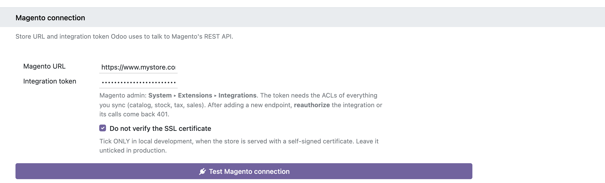</div>
    <p class="amc-cap" style="font-size: 13px; color: #7c7c94; margin: 0 0 30px; text-align: center">Settings &#9656; Magento Connect &mdash; the connection block.</p>
  </div>

  <div class="amc-sec" style="padding: 46px 32px; max-width: 1120px; margin: 0 auto; box-sizing: border-box">
    <span class="amc-kicker" style="display: inline-block; font-size: 12px; font-weight: 700; letter-spacing: .09em; text-transform: uppercase; color: #7a5cc4; margin-bottom: 8px">Configuration</span>
    <h2 style="font-size: 28px; margin: 0 0 10px; font-weight: 700; color: #1f2547; letter-spacing: -.3px">Names, never ids</h2>
    <p class="amc-lead" style="font-size: 17px; color: #565672; margin: 0 0 30px; max-width: 830px">The two systems name the same things differently, and their internal
       ids are not portable &mdash; the id of a tax in your test database is not the id in
       production. So the module never asks you to type one. You pick from lists that
       Magento's own API fills in.</p>

    <div class="amc-split" style="display: flex; flex-wrap: wrap; gap: 34px; align-items: center; margin-bottom: 40px">
      <div style="flex: 1 1 380px; min-width: 0">
        <h3 style="font-size: 18px; margin: 0 0 8px; font-weight: 700; color: #1f2547">Warehouses &rarr; inventory sources</h3>
        <p style="color:#565672;margin:0 0 14px">Each Odoo warehouse pushes its stock to one
           Magento MSI source. Warehouses that share a source are summed. A warehouse with no
           source is simply not synced &mdash; never guessed.</p>
        <div class="amc-shot" style="border: 1px solid #d9d9e8; border-radius: 10px; overflow: hidden; box-shadow: 0 6px 22px rgba(31,37,71,.10); background: #fff; margin: 0 0 10px">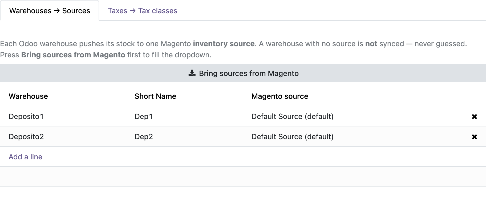</div>
      </div>
      <div style="flex: 1 1 380px; min-width: 0">
        <h3 style="font-size: 18px; margin: 0 0 8px; font-weight: 700; color: #1f2547">Taxes &rarr; product tax classes</h3>
        <p style="color:#565672;margin:0 0 14px">Press <b>Auto-match by rate</b> and the module reads
           Magento's tax rules and rates and pairs each Odoo tax with the class that applies the
           same percentage. It only matches when the answer is unambiguous; anything else waits
           for a human.</p>
        <div class="amc-shot" style="border: 1px solid #d9d9e8; border-radius: 10px; overflow: hidden; box-shadow: 0 6px 22px rgba(31,37,71,.10); background: #fff; margin: 0 0 10px">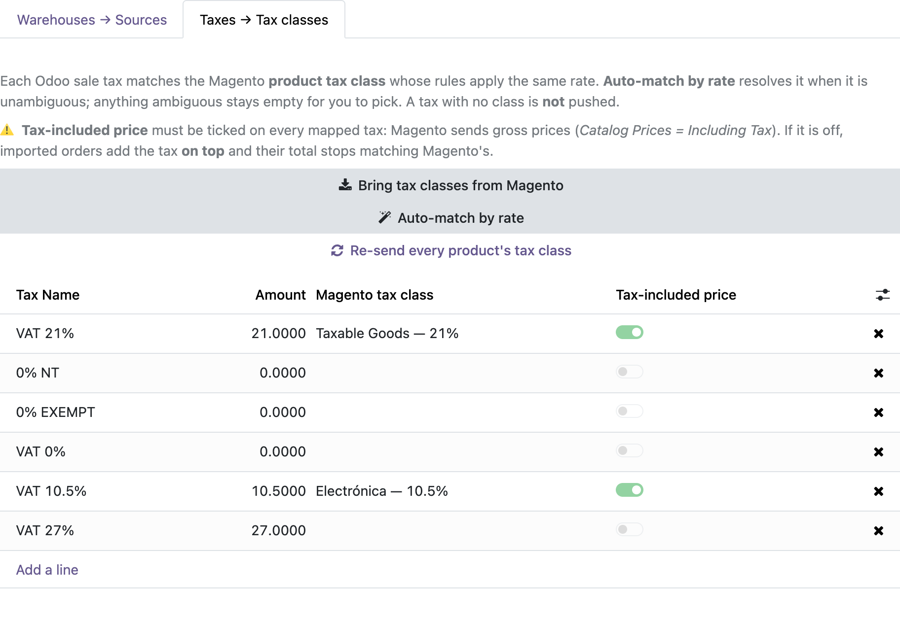</div>
      </div>
    </div>

    <div class="amc-note" style="border: 1px solid #e3d6a8; background: #fdf9ec; border-radius: 10px; padding: 20px 22px; margin: 26px 0 0; box-sizing: border-box">
      <h3 style="font-size: 16.5px; margin: 0 0 8px; font-weight: 700; color: #6b5312">&#9888; Before you map: the taxes must already exist on both sides</h3>
      <p style="margin: 0 0 10px; font-size: 14.5px; color: #6b6146"><b>This module does not create taxes.</b> It does not add a tax in Odoo, and it does not
         create a product tax class in Magento. It only <i>relates</i> what already exists &mdash; so
         every rate you sell at has to be set up in <b>both</b> systems first, with the
         <b>same percentage</b>: an <code style="background: #f1f1f7; border-radius: 4px; padding: 1px 5px; font-size: 13.5px; color: #55306e; box-sizing: border-box">IVA 21%</code> in Odoo and a Magento product tax class
         whose tax rules apply 21%.</p>
      <p style="margin: 0 0 10px; font-size: 14.5px; color: #6b6146">That is exactly what makes the match automatic: the rate is the only thing both systems
         agree on. If a rate exists in Odoo but no Magento class applies it, the tax simply stays
         <b>pending</b> &mdash; and the products carrying it never get their tax class pushed. It is
         reported, never guessed.</p>
      <p style="margin: 0 0 10px; font-size: 14.5px; color: #6b6146; margin-bottom: 0">Two more things the rate matching needs: a Magento class that applies <b>one</b> rate
         (a class charging two different rates cannot be matched automatically and must be chosen
         by hand), and the Odoo tax marked <b>Included in Price</b>, because Magento sends gross
         prices.</p>
    </div>
  </div>

  <div class="amc-sec amc-alt" style="padding: 46px 32px; max-width: 1120px; margin: 0 auto; box-sizing: border-box; background: #f6f6fb">
    <span class="amc-kicker" style="display: inline-block; font-size: 12px; font-weight: 700; letter-spacing: .09em; text-transform: uppercase; color: #7a5cc4; margin-bottom: 8px">The part most connectors skip</span>
    <h2 style="font-size: 28px; margin: 0 0 10px; font-weight: 700; color: #1f2547; letter-spacing: -.3px">When a sync fails, Odoo says so</h2>
    <p class="amc-quote" style="border-left: 4px solid #7a5cc4; padding: 4px 0 4px 18px; margin: 0 0 26px; color: #444; font-size: 16px; box-sizing: border-box">An integration is not judged by whether the happy path works &mdash; that is
       solved in a day. It is judged by how long it takes a human to understand why it
       <i>didn't</i> work.</p>
    <p class="amc-lead" style="font-size: 17px; color: #565672; margin: 0 0 30px; max-width: 830px">Every run is recorded: what was sent, what came back, which records went
       through and which did not. Failures keep the detail per item and are <b>never purged
       automatically</b>; successes collapse to one line and are cleaned up after N days.
       No container logs, no commands.</p>

    <div class="amc-shot" style="border: 1px solid #d9d9e8; border-radius: 10px; overflow: hidden; box-shadow: 0 6px 22px rgba(31,37,71,.10); background: #fff; margin: 0 0 10px">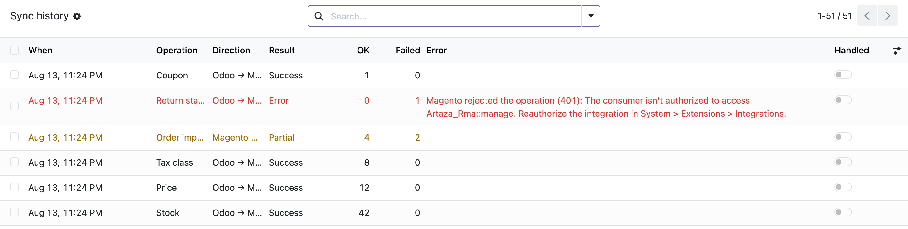</div>
    <p class="amc-cap" style="font-size: 13px; color: #7c7c94; margin: 0 0 30px; text-align: center">The history: one row per run, with the counts that matter.</p>
    <div class="amc-shot" style="border: 1px solid #d9d9e8; border-radius: 10px; overflow: hidden; box-shadow: 0 6px 22px rgba(31,37,71,.10); background: #fff; margin: 0 0 10px">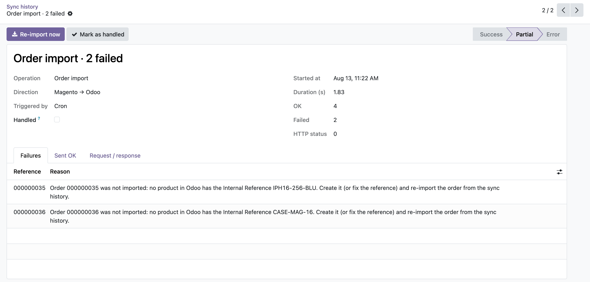</div>
    <p class="amc-cap" style="font-size: 13px; color: #7c7c94; margin: 0 0 30px; text-align: center">A failed import, with the exact reason per order &mdash; and one button to replay it.</p>

    <div class="amc-grid" style="display: flex; flex-wrap: wrap; gap: 20px">
      <div class="amc-card" style="flex: 1 1 300px; border: 1px solid #e3e3ee; border-radius: 10px; padding: 22px; background: #fff; box-sizing: border-box"><h3 style="font-size: 17px; margin: 0 0 8px; font-weight: 700; color: #1f2547">Reasons, not stack traces</h3>
        <p style="margin: 0; font-size: 14.5px; color: #565672">Each failed record carries the message Magento or Odoo actually returned, in
           language an operator can act on.</p></div>
      <div class="amc-card" style="flex: 1 1 300px; border: 1px solid #e3e3ee; border-radius: 10px; padding: 22px; background: #fff; box-sizing: border-box"><h3 style="font-size: 17px; margin: 0 0 8px; font-weight: 700; color: #1f2547">Fix it, then retry</h3>
        <p style="margin: 0; font-size: 14.5px; color: #565672">Pushes are re-queued for the next run. Failed imports are re-fetched on the spot,
           by their Magento number.</p></div>
      <div class="amc-card" style="flex: 1 1 300px; border: 1px solid #e3e3ee; border-radius: 10px; padding: 22px; background: #fff; box-sizing: border-box"><h3 style="font-size: 17px; margin: 0 0 8px; font-weight: 700; color: #1f2547">Survives the rollback</h3>
        <p style="margin: 0; font-size: 14.5px; color: #565672">The history row is written on its own database transaction, so a failure that
           rolls everything back cannot erase its own trace.</p></div>
    </div>
  </div>

  <div class="amc-sec" style="padding: 46px 32px; max-width: 1120px; margin: 0 auto; box-sizing: border-box">
    <span class="amc-kicker" style="display: inline-block; font-size: 12px; font-weight: 700; letter-spacing: .09em; text-transform: uppercase; color: #7a5cc4; margin-bottom: 8px">Magento &rarr; Odoo</span>
    <h2 style="font-size: 28px; margin: 0 0 10px; font-weight: 700; color: #1f2547; letter-spacing: -.3px">Orders arrive as the right document</h2>
    <p class="amc-lead" style="font-size: 17px; color: #565672; margin: 0 0 30px; max-width: 830px">Paid orders come in as a <b>confirmed sale</b>. Offline orders still
       awaiting payment come in as a <b>quotation</b> you can negotiate &mdash; adjust the total in
       Odoo and push the agreed figure back for the customer to see, without ever touching
       Magento's balances.</p>

    <div class="amc-grid" style="display: flex; flex-wrap: wrap; gap: 20px; margin-bottom:28px">
      <div class="amc-card" style="flex: 1 1 300px; border: 1px solid #e3e3ee; border-radius: 10px; padding: 22px; background: #fff; box-sizing: border-box"><h3 style="font-size: 17px; margin: 0 0 8px; font-weight: 700; color: #1f2547">A cursor you control</h3>
        <p style="margin: 0; font-size: 14.5px; color: #565672">The import reads everything updated since a moment you can see and change. Move it
           back to re-read a period; orders already in Odoo are skipped, never duplicated.</p></div>
      <div class="amc-card" style="flex: 1 1 300px; border: 1px solid #e3e3ee; border-radius: 10px; padding: 22px; background: #fff; box-sizing: border-box"><h3 style="font-size: 17px; margin: 0 0 8px; font-weight: 700; color: #1f2547">All or nothing</h3>
        <p style="margin: 0; font-size: 14.5px; color: #565672">If a SKU on the order does not exist in Odoo, the order is <b>not</b> imported half
           complete with a total that no longer matches Magento. It is refused, and the reason
           names the missing reference.</p></div>
      <div class="amc-card" style="flex: 1 1 300px; border: 1px solid #e3e3ee; border-radius: 10px; padding: 22px; background: #fff; box-sizing: border-box"><h3 style="font-size: 17px; margin: 0 0 8px; font-weight: 700; color: #1f2547">One order, by number</h3>
        <p style="margin: 0; font-size: 14.5px; color: #565672">A small dialog fetches a single order whatever the cursor says &mdash; the escape hatch
           for anything that needs to come in right now.</p></div>
    </div>

    <div class="amc-shot" style="border: 1px solid #d9d9e8; border-radius: 10px; overflow: hidden; box-shadow: 0 6px 22px rgba(31,37,71,.10); background: #fff; margin: 0 0 10px">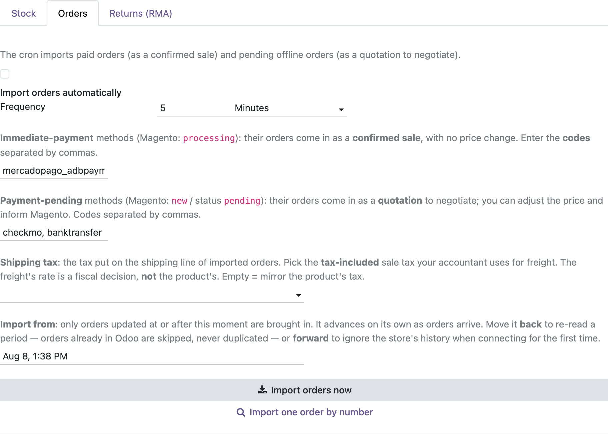</div>
    <p class="amc-cap" style="font-size: 13px; color: #7c7c94; margin: 0 0 30px; text-align: center">Order import settings: payment-method routing, shipping tax, and the cursor.</p>
    <div class="amc-shot" style="border: 1px solid #d9d9e8; border-radius: 10px; overflow: hidden; box-shadow: 0 6px 22px rgba(31,37,71,.10); background: #fff; margin: 0 0 10px; max-width:620px;margin-left:auto;margin-right:auto">
      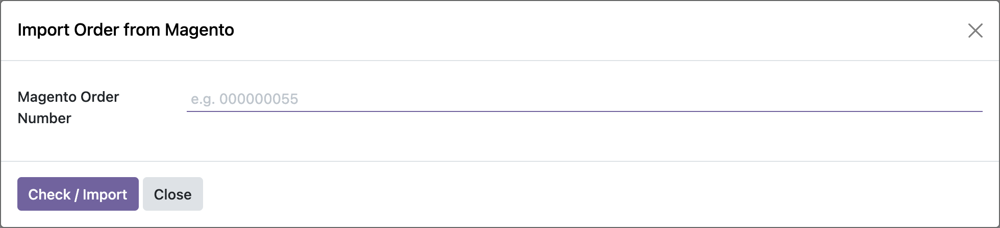</div>
    <p class="amc-cap" style="font-size: 13px; color: #7c7c94; margin: 0 0 30px; text-align: center">Import one order by its Magento number.</p>
  </div>

  <div class="amc-sec amc-alt" style="padding: 46px 32px; max-width: 1120px; margin: 0 auto; box-sizing: border-box; background: #f6f6fb">
    <span class="amc-kicker" style="display: inline-block; font-size: 12px; font-weight: 700; letter-spacing: .09em; text-transform: uppercase; color: #7a5cc4; margin-bottom: 8px">Negotiation</span>
    <h2 style="font-size: 28px; margin: 0 0 10px; font-weight: 700; color: #1f2547; letter-spacing: -.3px">Type the total you agreed on. Odoo works out the rest.</h2>
    <p class="amc-lead" style="font-size: 17px; color: #565672; margin: 0 0 30px; max-width: 830px">B2B prices get negotiated on the phone, not in a checkout. But Odoo
       only computes <b>forward</b> &mdash; unit price &times; quantity, minus a discount, gives a total &mdash;
       so there is no native way to say <i>"this order is 95,000"</i>. You end up reverse-engineering
       a discount percentage per line and landing a few pesos off.</p>

    <div class="amc-split" style="display: flex; flex-wrap: wrap; gap: 34px; align-items: center; margin-bottom: 40px">
      <div style="flex: 1 1 380px; min-width: 0">
        <h3 style="font-size: 18px; margin: 0 0 8px; font-weight: 700; color: #1f2547">The problem with a discount %</h3>
        <p style="color:#565672;margin:0 0 12px">A uniform percentage rounds to two decimals on
           every line. On an order of 97,000 that lands near 95,000 &mdash; but not <i>on</i> it, and
           the customer was quoted a round number.</p>
        <h3 style="font-size: 18px; margin: 0 0 8px; font-weight: 700; color: #1f2547">What this does instead</h3>
        <p style="color:#565672;margin:0">It scales each line's tax-included unit price by the
           ratio you asked for, then <b>absorbs the rounding residual on the last line</b>, so the
           order total lands on <b>exactly</b> the figure you typed. A factor below 1 is a
           discount; above 1 is a surcharge &mdash; a fee for a 90-day cheque uses the same box.</p>
      </div>
      <div style="flex: 1 1 380px; min-width: 0">
        <div class="amc-shot" style="border: 1px solid #d9d9e8; border-radius: 10px; overflow: hidden; box-shadow: 0 6px 22px rgba(31,37,71,.10); background: #fff; margin: 0 0 10px">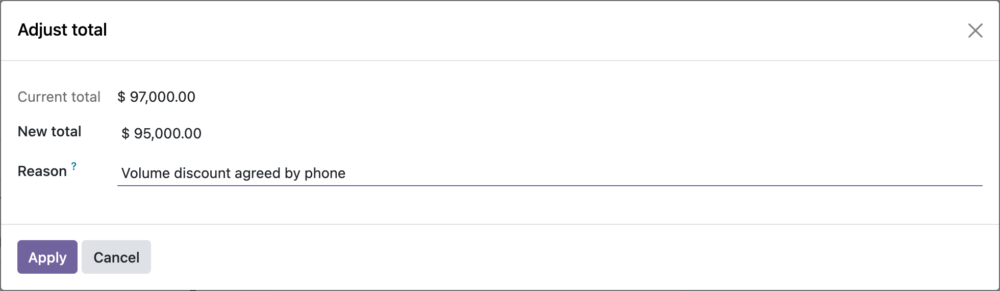</div>
        <p class="amc-cap" style="font-size: 13px; color: #7c7c94; margin: 0 0 30px; text-align: center; margin-bottom:0">One dialog: the agreed figure and why.</p>
      </div>
    </div>

    <div class="amc-shot" style="border: 1px solid #d9d9e8; border-radius: 10px; overflow: hidden; box-shadow: 0 6px 22px rgba(31,37,71,.10); background: #fff; margin: 0 0 10px">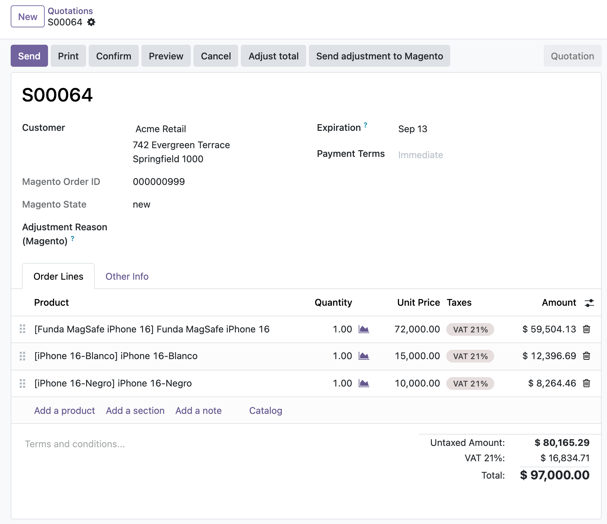</div>
    <p class="amc-cap" style="font-size: 13px; color: #7c7c94; margin: 0 0 30px; text-align: center"><b>Before</b> &mdash; the order arrives from Magento as a quotation. Round unit
       prices, total 97,000.</p>
    <div class="amc-shot" style="border: 1px solid #d9d9e8; border-radius: 10px; overflow: hidden; box-shadow: 0 6px 22px rgba(31,37,71,.10); background: #fff; margin: 0 0 10px">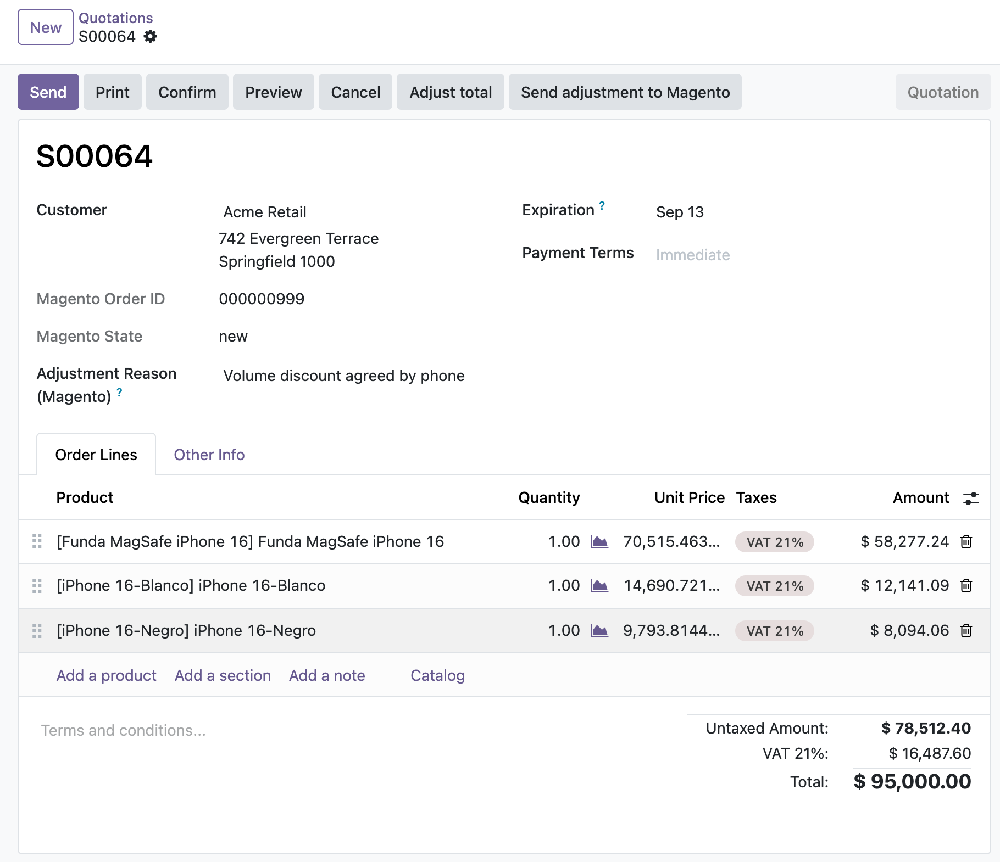</div>
    <p class="amc-cap" style="font-size: 13px; color: #7c7c94; margin: 0 0 30px; text-align: center"><b>After</b> &mdash; the discount is spread across every line and the total is
       <b>exactly</b> 95,000. The reason is stored on the order.</p>

    <div class="amc-grid" style="display: flex; flex-wrap: wrap; gap: 20px">
      <div class="amc-card" style="flex: 1 1 300px; border: 1px solid #e3e3ee; border-radius: 10px; padding: 22px; background: #fff; box-sizing: border-box"><h3 style="font-size: 17px; margin: 0 0 8px; font-weight: 700; color: #1f2547">Magento shows it, and nothing more</h3>
        <p style="margin: 0; font-size: 14.5px; color: #565672">The agreed total and your reason are pushed to the storefront so the customer sees
           what was arranged. They are informational fields: Magento's own balances are never
           touched, and the fiscal document is the Odoo invoice.</p></div>
      <div class="amc-card" style="flex: 1 1 300px; border: 1px solid #e3e3ee; border-radius: 10px; padding: 22px; background: #fff; box-sizing: border-box"><h3 style="font-size: 17px; margin: 0 0 8px; font-weight: 700; color: #1f2547">Only where it makes sense</h3>
        <p style="margin: 0; font-size: 14.5px; color: #565672">The buttons appear on orders that came from Magento, and orders still awaiting an
           offline payment arrive as quotations precisely so they can be negotiated before
           being confirmed.</p></div>
      <div class="amc-card" style="flex: 1 1 300px; border: 1px solid #e3e3ee; border-radius: 10px; padding: 22px; background: #fff; box-sizing: border-box"><h3 style="font-size: 17px; margin: 0 0 8px; font-weight: 700; color: #1f2547">Reversible, and on the record</h3>
        <p style="margin: 0; font-size: 14.5px; color: #565672">It rewrites unit prices on the sales order, so you can adjust again before
           confirming. Odoo's own tracking logs every change of total.</p></div>
    </div>
  </div>

  <div class="amc-sec" style="padding: 46px 32px; max-width: 1120px; margin: 0 auto; box-sizing: border-box">
    <span class="amc-kicker" style="display: inline-block; font-size: 12px; font-weight: 700; letter-spacing: .09em; text-transform: uppercase; color: #7a5cc4; margin-bottom: 8px">Odoo &rarr; Magento</span>
    <h2 style="font-size: 28px; margin: 0 0 10px; font-weight: 700; color: #1f2547; letter-spacing: -.3px">Stock, price and tax class</h2>
    <p class="amc-lead" style="font-size: 17px; color: #565672; margin: 0 0 30px; max-width: 830px">Change a quantity, a price or a tax rate in Odoo and the product is
       flagged; the next run sends it. Prices go over tax-included, matching a store configured
       with <code style="background: #f1f1f7; border-radius: 4px; padding: 1px 5px; font-size: 13.5px; color: #55306e; box-sizing: border-box">Catalog Prices = Including Tax</code>.</p>
    <div class="amc-shot" style="border: 1px solid #d9d9e8; border-radius: 10px; overflow: hidden; box-shadow: 0 6px 22px rgba(31,37,71,.10); background: #fff; margin: 0 0 10px">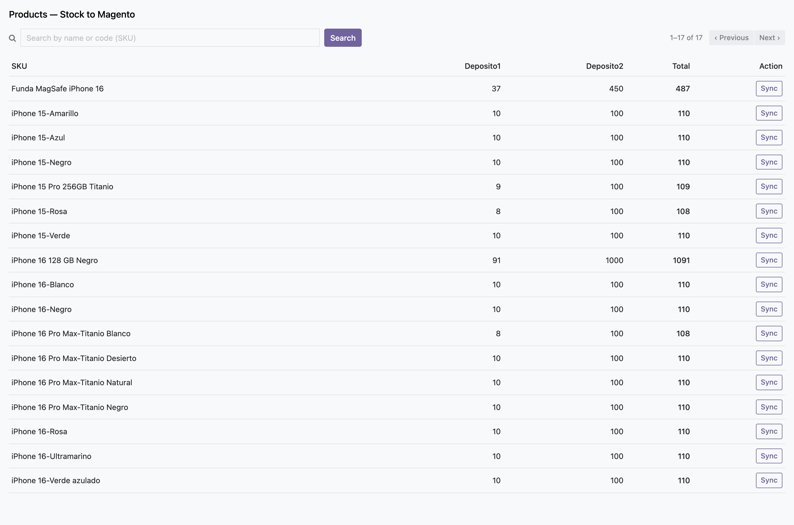</div>
    <p class="amc-cap" style="font-size: 13px; color: #7c7c94; margin: 0 0 30px; text-align: center">Stock per warehouse, per SKU &mdash; with a button to push one product on its own.</p>
  </div>

  <div class="amc-sec amc-alt" style="padding: 46px 32px; max-width: 1120px; margin: 0 auto; box-sizing: border-box; background: #f6f6fb">
    <span class="amc-kicker" style="display: inline-block; font-size: 12px; font-weight: 700; letter-spacing: .09em; text-transform: uppercase; color: #7a5cc4; margin-bottom: 8px">Returns</span>
    <h2 style="font-size: 28px; margin: 0 0 10px; font-weight: 700; color: #1f2547; letter-spacing: -.3px">The customer asks in Magento. The decision is made in Odoo.</h2>
    <p class="amc-lead" style="font-size: 17px; color: #565672; margin: 0 0 30px; max-width: 830px">Return requests are pulled into Odoo as records with their own state
       machine. Every transition pushes the new status &mdash; and the message you wrote &mdash; back to
       the storefront, so the customer always sees where their return stands. Magento decides
       nothing and calculates no money.</p>
    <div class="amc-shot" style="border: 1px solid #d9d9e8; border-radius: 10px; overflow: hidden; box-shadow: 0 6px 22px rgba(31,37,71,.10); background: #fff; margin: 0 0 10px">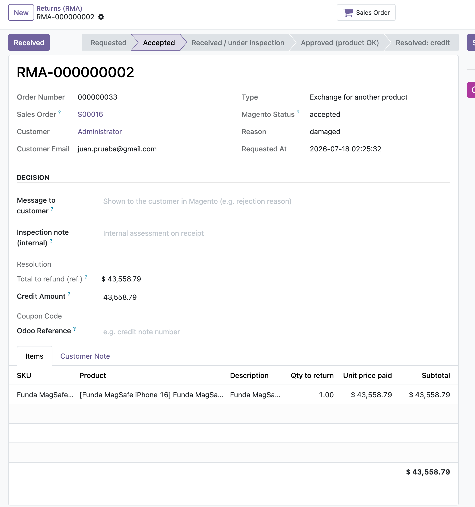</div>
    <p class="amc-cap" style="font-size: 13px; color: #7c7c94; margin: 0 0 30px; text-align: center">Accept, reject with a reason, inspect, approve, resolve &mdash; each step visible to the customer.</p>

    <div class="amc-grid" style="display: flex; flex-wrap: wrap; gap: 20px">
      <div class="amc-card" style="flex: 1 1 300px; border: 1px solid #e3e3ee; border-radius: 10px; padding: 22px; background: #fff; box-sizing: border-box"><h3 style="font-size: 17px; margin: 0 0 8px; font-weight: 700; color: #1f2547">Back to stock, or to scrap</h3>
        <p style="margin: 0; font-size: 14.5px; color: #565672">On approval a short dialog asks whether the goods are sellable again or a write-off,
           and Odoo creates and validates the incoming picking for you.</p></div>
      <div class="amc-card" style="flex: 1 1 300px; border: 1px solid #e3e3ee; border-radius: 10px; padding: 22px; background: #fff; box-sizing: border-box"><h3 style="font-size: 17px; margin: 0 0 8px; font-weight: 700; color: #1f2547">Credit note, correctly issued</h3>
        <p style="margin: 0; font-size: 14.5px; color: #565672">Resolving as credit issues the reversal through Odoo's native reversal wizard, so
           localisations that number credit notes separately get the right document type. Partial
           returns credit only what came back.</p></div>
      <div class="amc-card" style="flex: 1 1 300px; border: 1px solid #e3e3ee; border-radius: 10px; padding: 22px; background: #fff; box-sizing: border-box"><h3 style="font-size: 17px; margin: 0 0 8px; font-weight: 700; color: #1f2547">A coupon the customer can spend</h3>
        <p style="margin: 0; font-size: 14.5px; color: #565672">The credit is mirrored into Magento as a native single-use cart price rule. One coupon
           per return, idempotent &mdash; a retry never issues a second one.</p></div>
    </div>
  </div>

  <div class="amc-sec" style="padding: 46px 32px; max-width: 1120px; margin: 0 auto; box-sizing: border-box">
    <span class="amc-kicker" style="display: inline-block; font-size: 12px; font-weight: 700; letter-spacing: .09em; text-transform: uppercase; color: #7a5cc4; margin-bottom: 8px">Before you install</span>
    <h2 style="font-size: 28px; margin: 0 0 10px; font-weight: 700; color: #1f2547; letter-spacing: -.3px">What works out of the box, and what needs a Magento-side module</h2>
    <p class="amc-lead" style="font-size: 17px; color: #565672; margin: 0 0 30px; max-width: 830px">Most of the connector speaks Magento's <b>native</b> REST API and needs
       nothing installed on the store. Four features call endpoints that Magento Community does
       not provide, and require the companion Magento modules &mdash; both free, open source and
       installable with Composer.</p>

    <div class="amc-note" style="border: 1px solid #e3d6a8; background: #fdf9ec; border-radius: 10px; padding: 20px 22px; margin: 26px 0 0; box-sizing: border-box; margin:0 0 26px">
      <h3 style="font-size: 16.5px; margin: 0 0 8px; font-weight: 700; color: #6b5312">The companion modules</h3>
      <p style="margin: 0 0 10px; font-size: 14.5px; color: #6b6146">Published under <b>OSL-3.0</b>, the same license as the Magento core:</p>
      <p style="margin: 0 0 10px; font-size: 14.5px; color: #6b6146; font-family:ui-monospace,SFMono-Regular,Menlo,monospace;font-size:13.5px; background:#fff;border:1px solid #e8dcb0;border-radius:6px;padding:12px 14px">
        composer require artaza/module-odoo-integration<br/>
        composer require artaza/module-rma
      </p>
      <p style="margin: 0 0 10px; font-size: 14.5px; color: #6b6146"><b>artaza/module-odoo-integration</b> &mdash; the tax-class and negotiation endpoints &middot;
        <a href="https://packagist.org/packages/artaza/module-odoo-integration" style="color: #6a4fb0">Packagist</a> &middot;
        <a href="https://github.com/martinartaza/magento_odoo_integration" style="color: #6a4fb0">GitHub</a><br/>
        <b>artaza/module-rma</b> &mdash; returns for Magento Open Source, which has no native RMA &middot;
        <a href="https://packagist.org/packages/artaza/module-rma" style="color: #6a4fb0">Packagist</a> &middot;
        <a href="https://github.com/martinartaza/magento_rma" style="color: #6a4fb0">GitHub</a></p>
      <p style="margin: 0 0 10px; font-size: 14.5px; color: #6b6146; margin-bottom: 0">You only need the one that covers what you use: stock, prices, orders, invoices and
        shipments work with a stock Magento install.</p>
    </div>

    <table class="amc-tbl" style="width: 100%; max-width: 100%; border-collapse: collapse; font-size: 14.5px; background: #fff">
      <tr><th style="border: 1px solid #e3e3ee; padding: 10px 13px; text-align: left; vertical-align: top; overflow-wrap: break-word; word-break: break-word; box-sizing: border-box; background: #f1f1f7; font-weight: 700; color: #1f2547; width:34%">Feature</th><th style="border: 1px solid #e3e3ee; padding: 10px 13px; text-align: left; vertical-align: top; overflow-wrap: break-word; word-break: break-word; box-sizing: border-box; background: #f1f1f7; font-weight: 700; color: #1f2547; width:33%">Magento endpoint</th><th style="border: 1px solid #e3e3ee; padding: 10px 13px; text-align: left; vertical-align: top; overflow-wrap: break-word; word-break: break-word; box-sizing: border-box; background: #f1f1f7; font-weight: 700; color: #1f2547">Requires</th></tr>
      <tr><td style="border: 1px solid #e3e3ee; padding: 10px 13px; text-align: left; vertical-align: top; overflow-wrap: break-word; word-break: break-word; box-sizing: border-box">Stock per source (MSI)</td><td style="border: 1px solid #e3e3ee; padding: 10px 13px; text-align: left; vertical-align: top; overflow-wrap: break-word; word-break: break-word; box-sizing: border-box"><code style="background: #f1f1f7; border-radius: 4px; padding: 1px 5px; font-size: 13.5px; color: #55306e; box-sizing: border-box">inventory/source-items</code></td><td class="amc-ok" style="border: 1px solid #e3e3ee; padding: 10px 13px; text-align: left; vertical-align: top; overflow-wrap: break-word; word-break: break-word; box-sizing: border-box; color: #1c7c4a; font-weight: 700">Native Magento</td></tr>
      <tr><td style="border: 1px solid #e3e3ee; padding: 10px 13px; text-align: left; vertical-align: top; overflow-wrap: break-word; word-break: break-word; box-sizing: border-box">Base price</td><td style="border: 1px solid #e3e3ee; padding: 10px 13px; text-align: left; vertical-align: top; overflow-wrap: break-word; word-break: break-word; box-sizing: border-box"><code style="background: #f1f1f7; border-radius: 4px; padding: 1px 5px; font-size: 13.5px; color: #55306e; box-sizing: border-box">products/base-prices</code></td><td class="amc-ok" style="border: 1px solid #e3e3ee; padding: 10px 13px; text-align: left; vertical-align: top; overflow-wrap: break-word; word-break: break-word; box-sizing: border-box; color: #1c7c4a; font-weight: 700">Native Magento</td></tr>
      <tr><td style="border: 1px solid #e3e3ee; padding: 10px 13px; text-align: left; vertical-align: top; overflow-wrap: break-word; word-break: break-word; box-sizing: border-box">Order import</td><td style="border: 1px solid #e3e3ee; padding: 10px 13px; text-align: left; vertical-align: top; overflow-wrap: break-word; word-break: break-word; box-sizing: border-box"><code style="background: #f1f1f7; border-radius: 4px; padding: 1px 5px; font-size: 13.5px; color: #55306e; box-sizing: border-box">orders</code> + searchCriteria</td><td class="amc-ok" style="border: 1px solid #e3e3ee; padding: 10px 13px; text-align: left; vertical-align: top; overflow-wrap: break-word; word-break: break-word; box-sizing: border-box; color: #1c7c4a; font-weight: 700">Native Magento</td></tr>
      <tr><td style="border: 1px solid #e3e3ee; padding: 10px 13px; text-align: left; vertical-align: top; overflow-wrap: break-word; word-break: break-word; box-sizing: border-box">Invoice &amp; shipment</td><td style="border: 1px solid #e3e3ee; padding: 10px 13px; text-align: left; vertical-align: top; overflow-wrap: break-word; word-break: break-word; box-sizing: border-box"><code style="background: #f1f1f7; border-radius: 4px; padding: 1px 5px; font-size: 13.5px; color: #55306e; box-sizing: border-box">order/{id}/invoice</code>, <code style="background: #f1f1f7; border-radius: 4px; padding: 1px 5px; font-size: 13.5px; color: #55306e; box-sizing: border-box">/ship</code></td><td class="amc-ok" style="border: 1px solid #e3e3ee; padding: 10px 13px; text-align: left; vertical-align: top; overflow-wrap: break-word; word-break: break-word; box-sizing: border-box; color: #1c7c4a; font-weight: 700">Native Magento</td></tr>
      <tr><td style="border: 1px solid #e3e3ee; padding: 10px 13px; text-align: left; vertical-align: top; overflow-wrap: break-word; word-break: break-word; box-sizing: border-box">Credit coupon</td><td style="border: 1px solid #e3e3ee; padding: 10px 13px; text-align: left; vertical-align: top; overflow-wrap: break-word; word-break: break-word; box-sizing: border-box"><code style="background: #f1f1f7; border-radius: 4px; padding: 1px 5px; font-size: 13.5px; color: #55306e; box-sizing: border-box">salesRules</code> + <code style="background: #f1f1f7; border-radius: 4px; padding: 1px 5px; font-size: 13.5px; color: #55306e; box-sizing: border-box">coupons</code></td><td class="amc-ok" style="border: 1px solid #e3e3ee; padding: 10px 13px; text-align: left; vertical-align: top; overflow-wrap: break-word; word-break: break-word; box-sizing: border-box; color: #1c7c4a; font-weight: 700">Native Magento</td></tr>
      <tr><td style="border: 1px solid #e3e3ee; padding: 10px 13px; text-align: left; vertical-align: top; overflow-wrap: break-word; word-break: break-word; box-sizing: border-box">Tax class auto-match</td><td style="border: 1px solid #e3e3ee; padding: 10px 13px; text-align: left; vertical-align: top; overflow-wrap: break-word; word-break: break-word; box-sizing: border-box"><code style="background: #f1f1f7; border-radius: 4px; padding: 1px 5px; font-size: 13.5px; color: #55306e; box-sizing: border-box">taxClasses</code>, <code style="background: #f1f1f7; border-radius: 4px; padding: 1px 5px; font-size: 13.5px; color: #55306e; box-sizing: border-box">taxRules</code>, <code style="background: #f1f1f7; border-radius: 4px; padding: 1px 5px; font-size: 13.5px; color: #55306e; box-sizing: border-box">taxRates</code></td><td class="amc-ok" style="border: 1px solid #e3e3ee; padding: 10px 13px; text-align: left; vertical-align: top; overflow-wrap: break-word; word-break: break-word; box-sizing: border-box; color: #1c7c4a; font-weight: 700">Native Magento</td></tr>
      <tr><td style="border: 1px solid #e3e3ee; padding: 10px 13px; text-align: left; vertical-align: top; overflow-wrap: break-word; word-break: break-word; box-sizing: border-box">Push the product tax class</td><td style="border: 1px solid #e3e3ee; padding: 10px 13px; text-align: left; vertical-align: top; overflow-wrap: break-word; word-break: break-word; box-sizing: border-box"><code style="background: #f1f1f7; border-radius: 4px; padding: 1px 5px; font-size: 13.5px; color: #55306e; box-sizing: border-box">products/tax-class</code></td><td class="amc-need" style="border: 1px solid #e3e3ee; padding: 10px 13px; text-align: left; vertical-align: top; overflow-wrap: break-word; word-break: break-word; box-sizing: border-box; color: #9a5b12; font-weight: 700">module-odoo-integration</td></tr>
      <tr><td style="border: 1px solid #e3e3ee; padding: 10px 13px; text-align: left; vertical-align: top; overflow-wrap: break-word; word-break: break-word; box-sizing: border-box">Negotiated total on the order</td><td style="border: 1px solid #e3e3ee; padding: 10px 13px; text-align: left; vertical-align: top; overflow-wrap: break-word; word-break: break-word; box-sizing: border-box"><code style="background: #f1f1f7; border-radius: 4px; padding: 1px 5px; font-size: 13.5px; color: #55306e; box-sizing: border-box">orders/{id}/negotiation</code></td><td class="amc-need" style="border: 1px solid #e3e3ee; padding: 10px 13px; text-align: left; vertical-align: top; overflow-wrap: break-word; word-break: break-word; box-sizing: border-box; color: #9a5b12; font-weight: 700">module-odoo-integration</td></tr>
      <tr><td style="border: 1px solid #e3e3ee; padding: 10px 13px; text-align: left; vertical-align: top; overflow-wrap: break-word; word-break: break-word; box-sizing: border-box">Return requests (RMA)</td><td style="border: 1px solid #e3e3ee; padding: 10px 13px; text-align: left; vertical-align: top; overflow-wrap: break-word; word-break: break-word; box-sizing: border-box"><code style="background: #f1f1f7; border-radius: 4px; padding: 1px 5px; font-size: 13.5px; color: #55306e; box-sizing: border-box">rma</code></td><td class="amc-need" style="border: 1px solid #e3e3ee; padding: 10px 13px; text-align: left; vertical-align: top; overflow-wrap: break-word; word-break: break-word; box-sizing: border-box; color: #9a5b12; font-weight: 700">module-rma</td></tr>
      <tr><td style="border: 1px solid #e3e3ee; padding: 10px 13px; text-align: left; vertical-align: top; overflow-wrap: break-word; word-break: break-word; box-sizing: border-box">Return status push</td><td style="border: 1px solid #e3e3ee; padding: 10px 13px; text-align: left; vertical-align: top; overflow-wrap: break-word; word-break: break-word; box-sizing: border-box"><code style="background: #f1f1f7; border-radius: 4px; padding: 1px 5px; font-size: 13.5px; color: #55306e; box-sizing: border-box">rma/{id}/status</code></td><td class="amc-need" style="border: 1px solid #e3e3ee; padding: 10px 13px; text-align: left; vertical-align: top; overflow-wrap: break-word; word-break: break-word; box-sizing: border-box; color: #9a5b12; font-weight: 700">module-rma</td></tr>
    </table>

    <div style="margin-top:26px">
      <h3 style="font-size: 18px; margin: 0 0 8px; font-weight: 700; color: #1f2547">Requirements</h3>
      <ul class="amc-list" style="margin: 0; padding-left: 20px; color: #565672; box-sizing: border-box">
        <li style="margin-bottom: 7px">Odoo <b>19.0</b>, with <code style="background: #f1f1f7; border-radius: 4px; padding: 1px 5px; font-size: 13.5px; color: #55306e; box-sizing: border-box">sale</code>, <code style="background: #f1f1f7; border-radius: 4px; padding: 1px 5px; font-size: 13.5px; color: #55306e; box-sizing: border-box">stock</code>, <code style="background: #f1f1f7; border-radius: 4px; padding: 1px 5px; font-size: 13.5px; color: #55306e; box-sizing: border-box">sale_stock</code> and <code style="background: #f1f1f7; border-radius: 4px; padding: 1px 5px; font-size: 13.5px; color: #55306e; box-sizing: border-box">account</code>.</li>
        <li style="margin-bottom: 7px">Magento <b>2.4.x</b> with an <b>integration</b> whose ACL covers what you sync. After
            adding a new endpoint, reauthorize the integration or its calls come back <code style="background: #f1f1f7; border-radius: 4px; padding: 1px 5px; font-size: 13.5px; color: #55306e; box-sizing: border-box">401</code>.</li>
        <li style="margin-bottom: 7px"><b>The same taxes on both sides.</b> Every rate you sell at must exist in Odoo
            <i>and</i> as a Magento product tax class charging that same percentage &mdash; the module
            relates them, it never creates them. Each Magento class should apply a single rate,
            or it cannot be matched automatically.</li>
        <li style="margin-bottom: 7px">Magento set to <b>Catalog Prices = Including Tax</b>, and the matching Odoo taxes marked
            <b>Included in Price</b> &mdash; otherwise imported totals will not match the store's.</li>
        <li style="margin-bottom: 7px">Products are matched by SKU: the Magento <code style="background: #f1f1f7; border-radius: 4px; padding: 1px 5px; font-size: 13.5px; color: #55306e; box-sizing: border-box">sku</code> must equal the Odoo
            <b>Internal Reference</b>.</li>
      </ul>
    </div>
  </div>

  <div class="amc-sec amc-alt" style="padding: 46px 32px; max-width: 1120px; margin: 0 auto; box-sizing: border-box; background: #f6f6fb">
    <h2 style="font-size: 28px; margin: 0 0 10px; font-weight: 700; color: #1f2547; letter-spacing: -.3px">Everything in one place</h2>
    <div class="amc-grid" style="display: flex; flex-wrap: wrap; gap: 20px">
      <div class="amc-card" style="flex: 1 1 300px; border: 1px solid #e3e3ee; border-radius: 10px; padding: 22px; background: #fff; box-sizing: border-box"><h3 style="font-size: 17px; margin: 0 0 8px; font-weight: 700; color: #1f2547">Stock</h3><p style="margin: 0; font-size: 14.5px; color: #565672">Per warehouse, mapped to MSI sources, in batches you size.</p></div>
      <div class="amc-card" style="flex: 1 1 300px; border: 1px solid #e3e3ee; border-radius: 10px; padding: 22px; background: #fff; box-sizing: border-box"><h3 style="font-size: 17px; margin: 0 0 8px; font-weight: 700; color: #1f2547">Prices</h3><p style="margin: 0; font-size: 14.5px; color: #565672">Tax-included base price, pushed when it changes.</p></div>
      <div class="amc-card" style="flex: 1 1 300px; border: 1px solid #e3e3ee; border-radius: 10px; padding: 22px; background: #fff; box-sizing: border-box"><h3 style="font-size: 17px; margin: 0 0 8px; font-weight: 700; color: #1f2547">Tax class</h3><p style="margin: 0; font-size: 14.5px; color: #565672">Auto-matched by rate; only asks when genuinely ambiguous.</p></div>
      <div class="amc-card" style="flex: 1 1 300px; border: 1px solid #e3e3ee; border-radius: 10px; padding: 22px; background: #fff; box-sizing: border-box"><h3 style="font-size: 17px; margin: 0 0 8px; font-weight: 700; color: #1f2547">Orders</h3><p style="margin: 0; font-size: 14.5px; color: #565672">Cursor-based, paid vs pending routing, customer upserted.</p></div>
      <div class="amc-card" style="flex: 1 1 300px; border: 1px solid #e3e3ee; border-radius: 10px; padding: 22px; background: #fff; box-sizing: border-box"><h3 style="font-size: 17px; margin: 0 0 8px; font-weight: 700; color: #1f2547">Negotiation</h3><p style="margin: 0; font-size: 14.5px; color: #565672">Type the agreed total; the discount is prorated across the lines and shown to the customer.</p></div>
      <div class="amc-card" style="flex: 1 1 300px; border: 1px solid #e3e3ee; border-radius: 10px; padding: 22px; background: #fff; box-sizing: border-box"><h3 style="font-size: 17px; margin: 0 0 8px; font-weight: 700; color: #1f2547">Fulfillment</h3><p style="margin: 0; font-size: 14.5px; color: #565672">Validate the delivery in Odoo; Magento invoices and ships.</p></div>
      <div class="amc-card" style="flex: 1 1 300px; border: 1px solid #e3e3ee; border-radius: 10px; padding: 22px; background: #fff; box-sizing: border-box"><h3 style="font-size: 17px; margin: 0 0 8px; font-weight: 700; color: #1f2547">Returns</h3><p style="margin: 0; font-size: 14.5px; color: #565672">State machine, restock decision, credit note, coupon.</p></div>
      <div class="amc-card" style="flex: 1 1 300px; border: 1px solid #e3e3ee; border-radius: 10px; padding: 22px; background: #fff; box-sizing: border-box"><h3 style="font-size: 17px; margin: 0 0 8px; font-weight: 700; color: #1f2547">Sync history</h3><p style="margin: 0; font-size: 14.5px; color: #565672">Every failure on screen, with retry and retention.</p></div>
      <div class="amc-card" style="flex: 1 1 300px; border: 1px solid #e3e3ee; border-radius: 10px; padding: 22px; background: #fff; box-sizing: border-box"><h3 style="font-size: 17px; margin: 0 0 8px; font-weight: 700; color: #1f2547">Scheduling</h3><p style="margin: 0; font-size: 14.5px; color: #565672">Each import and push has its own cron and frequency.</p></div>
    </div>
  </div>

  <div class="amc-foot" style="text-align: center; color: #7c7c94; font-size: 14px; padding: 34px 32px 46px; box-sizing: border-box">
    Built and maintained by Sebastian Martin Artaza Saade &middot;
    <a href="https://www.artaza.net" style="color: #6a4fb0; color:#7a5cc4">artaza.net</a><br/>
    Support: martin.artaza@gmail.com &middot; Licensed under LGPL-3
  </div>

  </div><!-- /lang-en -->

  <!-- ================================================================ -->
  <!-- SPANISH                                                          -->
  <!-- ================================================================ -->

  <!-- The anchor sits on the divider rather than on the block itself, so a
       reader who clicks "Espa&ntilde;ol" lands on the explanation of what follows
       instead of halfway into a second, seemingly duplicated hero. -->
  <div class="amc-langbreak" id="es" style="background: #151a33; color: #fff; text-align: center; padding: 40px 32px; box-sizing: border-box">
    <span class="label" style="display: block; font-size: 13px; font-weight: 700; letter-spacing: .18em; text-transform: uppercase; color: #b9b6d6">Espa&ntilde;ol</span>
    <span class="title" style="display: block; font-size: 25px; font-weight: 700; margin: 9px 0 14px">La misma p&aacute;gina, en espa&ntilde;ol</span>
    <a href="#en" style="color: #cfc7ee; font-size: 14px; text-decoration: none; border-bottom: 1px solid rgba(207, 199, 238, .45); padding-bottom: 2px; box-sizing: border-box">&uarr; Read this page in English</a>
  </div>

  <div class="lang lang-es">

  <div class="amc-hero" style="background: linear-gradient(135deg, #1f2547 0%, #3c2a63 100%); color: #fff; text-align: center; padding: 60px 32px; box-sizing: border-box">
    <h1 style="font-size: 41px; margin: 0 0 14px; font-weight: 700; letter-spacing: -.6px; color: #fff">Magento&nbsp;2 Connector</h1>
    <p style="font-size: 19px; margin: 0 auto 26px; max-width: 760px; opacity: .93">Odoo habla directo con tu tienda Magento&nbsp;2 por su API REST. Sin middleware,
       sin un servicio extra para desplegar &mdash; y cada sincronizaci&oacute;n que falla queda en una
       pantalla, no en un archivo de log.</p>
    <div class="amc-badges" style="display: flex; flex-wrap: wrap; gap: 10px; justify-content: center">
      <span class="amc-badge" style="border: 1px solid rgba(255,255,255,.4); border-radius: 999px; padding: 5px 15px; font-size: 13px; box-sizing: border-box">Odoo 19.0</span>
      <span class="amc-badge" style="border: 1px solid rgba(255,255,255,.4); border-radius: 999px; padding: 5px 15px; font-size: 13px; box-sizing: border-box">Magento 2.4.x</span>
      <span class="amc-badge" style="border: 1px solid rgba(255,255,255,.4); border-radius: 999px; padding: 5px 15px; font-size: 13px; box-sizing: border-box">REST directo &mdash; sin middleware</span>
      <span class="amc-badge" style="border: 1px solid rgba(255,255,255,.4); border-radius: 999px; padding: 5px 15px; font-size: 13px; box-sizing: border-box">Stock &middot; Precios &middot; Impuestos &middot; Pedidos &middot; Devoluciones</span>
      <span class="amc-badge" style="border: 1px solid rgba(255,255,255,.4); border-radius: 999px; padding: 5px 15px; font-size: 13px; box-sizing: border-box">LGPL-3</span>
    </div>
  </div>

  <div class="amc-sec" style="padding: 46px 32px; max-width: 1120px; margin: 0 auto; box-sizing: border-box">
    <span class="amc-kicker" style="display: inline-block; font-size: 12px; font-weight: 700; letter-spacing: .09em; text-transform: uppercase; color: #7a5cc4; margin-bottom: 8px">Qu&eacute; hace</span>
    <h2 style="font-size: 28px; margin: 0 0 10px; font-weight: 700; color: #1f2547; letter-spacing: -.3px">Un conector, las dos direcciones</h2>
    <p class="amc-lead" style="font-size: 17px; color: #565672; margin: 0 0 30px; max-width: 830px">Odoo es due&ntilde;o del stock, los precios y los documentos fiscales. Magento
       es due&ntilde;o de la tienda y los pedidos. Este m&oacute;dulo mantiene a los dos en sinton&iacute;a &mdash; y te
       avisa, dentro de Odoo, cada vez que no pudo.</p>

    <svg viewBox="0 0 1050 300" width="100%" role="img"
         aria-label="Odoo env&iacute;a stock, precio y clase de impuesto a Magento; Magento manda pedidos y devoluciones a Odoo">
      <rect x="18" y="86" width="210" height="128" rx="12" fill="#f0edfa" stroke="#7a5cc4" stroke-width="2"/>
      <text x="123" y="134" text-anchor="middle" font-size="21" font-weight="700" fill="#1f2547"
            font-family="Helvetica, Arial, sans-serif">Odoo 19</text>
      <text x="123" y="160" text-anchor="middle" font-size="13" fill="#565672"
            font-family="Helvetica, Arial, sans-serif">stock &middot; precio &middot; impuesto</text>
      <text x="123" y="180" text-anchor="middle" font-size="13" fill="#565672"
            font-family="Helvetica, Arial, sans-serif">facturas &middot; notas de cr&eacute;dito</text>
      <rect x="822" y="86" width="210" height="128" rx="12" fill="#fdf0e8" stroke="#e8703a" stroke-width="2"/>
      <text x="927" y="134" text-anchor="middle" font-size="21" font-weight="700" fill="#1f2547"
            font-family="Helvetica, Arial, sans-serif">Magento 2</text>
      <text x="927" y="160" text-anchor="middle" font-size="13" fill="#565672"
            font-family="Helvetica, Arial, sans-serif">tienda &middot; cat&aacute;logo</text>
      <text x="927" y="180" text-anchor="middle" font-size="13" fill="#565672"
            font-family="Helvetica, Arial, sans-serif">pedidos &middot; devoluciones</text>
      <defs>
        <marker id="ar-es" markerWidth="9" markerHeight="9" refX="8" refY="3" orient="auto">
          <path d="M0,0 L0,6 L8,3 z" fill="#7a5cc4"/></marker>
        <marker id="al-es" markerWidth="9" markerHeight="9" refX="8" refY="3" orient="auto">
          <path d="M0,0 L0,6 L8,3 z" fill="#e8703a"/></marker>
      </defs>
      <line x1="238" y1="112" x2="812" y2="112" stroke="#7a5cc4" stroke-width="2" marker-end="url(#ar-es)"/>
      <text x="525" y="102" text-anchor="middle" font-size="14" font-weight="700" fill="#55306e"
            font-family="Helvetica, Arial, sans-serif">stock &middot; precio &middot; clase de impuesto &middot; factura &middot; remito</text>
      <line x1="812" y1="188" x2="238" y2="188" stroke="#e8703a" stroke-width="2" marker-end="url(#al-es)"/>
      <text x="525" y="212" text-anchor="middle" font-size="14" font-weight="700" fill="#8a4318"
            font-family="Helvetica, Arial, sans-serif">pedidos &middot; clientes &middot; solicitudes de devoluci&oacute;n (RMA)</text>
      <text x="525" y="150" text-anchor="middle" font-size="13" fill="#7c7c94"
            font-family="Helvetica, Arial, sans-serif">REST de Magento &middot; token de una integraci&oacute;n de Magento</text>
      <text x="525" y="262" text-anchor="middle" font-size="13" fill="#7c7c94"
            font-family="Helvetica, Arial, sans-serif">Cada llamada, exitosa o no, queda en el historial de sincronizaci&oacute;n de Odoo</text>
    </svg>
  </div>

  <div class="amc-sec amc-alt" style="padding: 46px 32px; max-width: 1120px; margin: 0 auto; box-sizing: border-box; background: #f6f6fb">
    <span class="amc-kicker" style="display: inline-block; font-size: 12px; font-weight: 700; letter-spacing: .09em; text-transform: uppercase; color: #7a5cc4; margin-bottom: 8px">Puesta en marcha</span>
    <h2 style="font-size: 28px; margin: 0 0 10px; font-weight: 700; color: #1f2547; letter-spacing: -.3px">Una URL y un token. Eso es toda la conexi&oacute;n.</h2>
    <p class="amc-lead" style="font-size: 17px; color: #565672; margin: 0 0 30px; max-width: 830px">Peg&aacute; la URL de la tienda y el token de acceso de una integraci&oacute;n de
       Magento, apret&aacute; <b>Probar conexi&oacute;n</b> y Odoo te responde con las vistas de tienda que
       encontr&oacute;. No hay nada m&aacute;s para instalar ni para hostear.</p>
    <div class="amc-shot" style="border: 1px solid #d9d9e8; border-radius: 10px; overflow: hidden; box-shadow: 0 6px 22px rgba(31,37,71,.10); background: #fff; margin: 0 0 10px"></div>
    <p class="amc-cap" style="font-size: 13px; color: #7c7c94; margin: 0 0 30px; text-align: center">Ajustes &#9656; Magento Connect &mdash; el bloque de conexi&oacute;n.</p>
  </div>

  <div class="amc-sec" style="padding: 46px 32px; max-width: 1120px; margin: 0 auto; box-sizing: border-box">
    <span class="amc-kicker" style="display: inline-block; font-size: 12px; font-weight: 700; letter-spacing: .09em; text-transform: uppercase; color: #7a5cc4; margin-bottom: 8px">Configuraci&oacute;n</span>
    <h2 style="font-size: 28px; margin: 0 0 10px; font-weight: 700; color: #1f2547; letter-spacing: -.3px">Nombres, nunca ids</h2>
    <p class="amc-lead" style="font-size: 17px; color: #565672; margin: 0 0 30px; max-width: 830px">Los dos sistemas le ponen nombres distintos a las mismas cosas, y sus ids
       internos no son portables &mdash; el id de un impuesto en tu base de prueba no es el id en
       producci&oacute;n. Por eso el m&oacute;dulo nunca te pide escribir uno: eleg&iacute;s de listas que llena la
       propia API de Magento.</p>

    <div class="amc-split" style="display: flex; flex-wrap: wrap; gap: 34px; align-items: center; margin-bottom: 40px">
      <div style="flex: 1 1 380px; min-width: 0">
        <h3 style="font-size: 18px; margin: 0 0 8px; font-weight: 700; color: #1f2547">Bodegas &rarr; inventory sources</h3>
        <p style="color:#565672;margin:0 0 14px">Cada bodega de Odoo env&iacute;a su stock a un
           <i>source</i> MSI de Magento. Las bodegas que comparten source se suman. Una bodega
           sin source no se sincroniza &mdash; jam&aacute;s se adivina.</p>
        <div class="amc-shot" style="border: 1px solid #d9d9e8; border-radius: 10px; overflow: hidden; box-shadow: 0 6px 22px rgba(31,37,71,.10); background: #fff; margin: 0 0 10px"></div>
      </div>
      <div style="flex: 1 1 380px; min-width: 0">
        <h3 style="font-size: 18px; margin: 0 0 8px; font-weight: 700; color: #1f2547">Impuestos &rarr; clases de impuesto</h3>
        <p style="color:#565672;margin:0 0 14px">Apret&aacute; <b>Auto-relacionar por al&iacute;cuota</b>: el
           m&oacute;dulo lee las reglas y tasas de impuesto de Magento y empareja cada impuesto de Odoo
           con la clase que aplica ese mismo porcentaje. Solo relaciona cuando la respuesta es
           inequ&iacute;voca; el resto espera a una persona.</p>
        <div class="amc-shot" style="border: 1px solid #d9d9e8; border-radius: 10px; overflow: hidden; box-shadow: 0 6px 22px rgba(31,37,71,.10); background: #fff; margin: 0 0 10px"></div>
      </div>
    </div>

    <div class="amc-note" style="border: 1px solid #e3d6a8; background: #fdf9ec; border-radius: 10px; padding: 20px 22px; margin: 26px 0 0; box-sizing: border-box">
      <h3 style="font-size: 16.5px; margin: 0 0 8px; font-weight: 700; color: #6b5312">&#9888; Antes de relacionar: los impuestos ya tienen que existir de los dos lados</h3>
      <p style="margin: 0 0 10px; font-size: 14.5px; color: #6b6146"><b>Este m&oacute;dulo no crea impuestos.</b> No da de alta un impuesto en Odoo ni crea una clase
         de impuesto de producto en Magento. Solo <i>relaciona</i> lo que ya existe &mdash; as&iacute; que cada
         al&iacute;cuota con la que vend&eacute;s tiene que estar configurada primero en <b>los dos</b> sistemas,
         con el <b>mismo porcentaje</b>: un <code style="background: #f1f1f7; border-radius: 4px; padding: 1px 5px; font-size: 13.5px; color: #55306e; box-sizing: border-box">IVA 21%</code> en Odoo y una clase de impuesto de
         Magento cuyas reglas apliquen 21%.</p>
      <p style="margin: 0 0 10px; font-size: 14.5px; color: #6b6146">Eso es justamente lo que hace autom&aacute;tica la relaci&oacute;n: la al&iacute;cuota es lo &uacute;nico en lo que
         los dos sistemas coinciden. Si una al&iacute;cuota existe en Odoo pero ninguna clase de Magento
         la aplica, el impuesto queda <b>pendiente</b> &mdash; y los productos que lo llevan nunca env&iacute;an
         su clase de impuesto. Se reporta, no se adivina.</p>
      <p style="margin: 0 0 10px; font-size: 14.5px; color: #6b6146; margin-bottom: 0">Dos cosas m&aacute;s que necesita el matcheo por al&iacute;cuota: una clase de Magento que aplique
         <b>una sola</b> tasa (una clase que cobre dos tasas distintas no se puede auto-relacionar
         y hay que elegirla a mano), y el impuesto de Odoo marcado <b>Incluido en el precio</b>,
         porque Magento manda precios con impuesto incluido.</p>
    </div>
  </div>

  <div class="amc-sec amc-alt" style="padding: 46px 32px; max-width: 1120px; margin: 0 auto; box-sizing: border-box; background: #f6f6fb">
    <span class="amc-kicker" style="display: inline-block; font-size: 12px; font-weight: 700; letter-spacing: .09em; text-transform: uppercase; color: #7a5cc4; margin-bottom: 8px">Lo que casi ning&uacute;n conector hace</span>
    <h2 style="font-size: 28px; margin: 0 0 10px; font-weight: 700; color: #1f2547; letter-spacing: -.3px">Cuando una sincronizaci&oacute;n falla, Odoo lo dice</h2>
    <p class="amc-quote" style="border-left: 4px solid #7a5cc4; padding: 4px 0 4px 18px; margin: 0 0 26px; color: #444; font-size: 16px; box-sizing: border-box">Una integraci&oacute;n no se juzga por si el camino feliz funciona &mdash; eso se
       resuelve en un d&iacute;a. Se juzga por <i>cu&aacute;nto tarda una persona en entender por qu&eacute; no
       funcion&oacute;</i>.</p>
    <p class="amc-lead" style="font-size: 17px; color: #565672; margin: 0 0 30px; max-width: 830px">Cada ejecuci&oacute;n queda registrada: qu&eacute; se mand&oacute;, qu&eacute; respondi&oacute;, qu&eacute;
       registros pasaron y cu&aacute;les no. Los fallos guardan el detalle por &iacute;tem y <b>nunca se
       purgan autom&aacute;ticamente</b>; los &eacute;xitos se resumen en una l&iacute;nea y se limpian a los N d&iacute;as.
       Sin logs de contenedor, sin comandos.</p>

    <div class="amc-shot" style="border: 1px solid #d9d9e8; border-radius: 10px; overflow: hidden; box-shadow: 0 6px 22px rgba(31,37,71,.10); background: #fff; margin: 0 0 10px"></div>
    <p class="amc-cap" style="font-size: 13px; color: #7c7c94; margin: 0 0 30px; text-align: center">El historial: una fila por ejecuci&oacute;n, con los n&uacute;meros que importan.</p>
    <div class="amc-shot" style="border: 1px solid #d9d9e8; border-radius: 10px; overflow: hidden; box-shadow: 0 6px 22px rgba(31,37,71,.10); background: #fff; margin: 0 0 10px"></div>
    <p class="amc-cap" style="font-size: 13px; color: #7c7c94; margin: 0 0 30px; text-align: center">Una importaci&oacute;n fallida, con el motivo exacto por pedido &mdash; y un bot&oacute;n para reintentarla.</p>

    <div class="amc-grid" style="display: flex; flex-wrap: wrap; gap: 20px">
      <div class="amc-card" style="flex: 1 1 300px; border: 1px solid #e3e3ee; border-radius: 10px; padding: 22px; background: #fff; box-sizing: border-box"><h3 style="font-size: 17px; margin: 0 0 8px; font-weight: 700; color: #1f2547">Motivos, no stack traces</h3>
        <p style="margin: 0; font-size: 14.5px; color: #565672">Cada registro fallido lleva el mensaje que devolvi&oacute; realmente Magento u Odoo, en un
           lenguaje sobre el que un operador puede actuar.</p></div>
      <div class="amc-card" style="flex: 1 1 300px; border: 1px solid #e3e3ee; border-radius: 10px; padding: 22px; background: #fff; box-sizing: border-box"><h3 style="font-size: 17px; margin: 0 0 8px; font-weight: 700; color: #1f2547">Arreglalo y reintent&aacute;</h3>
        <p style="margin: 0; font-size: 14.5px; color: #565672">Los env&iacute;os se vuelven a encolar para la pr&oacute;xima corrida. Las importaciones fallidas se
           traen en el acto, por su n&uacute;mero de Magento.</p></div>
      <div class="amc-card" style="flex: 1 1 300px; border: 1px solid #e3e3ee; border-radius: 10px; padding: 22px; background: #fff; box-sizing: border-box"><h3 style="font-size: 17px; margin: 0 0 8px; font-weight: 700; color: #1f2547">Sobrevive al rollback</h3>
        <p style="margin: 0; font-size: 14.5px; color: #565672">La fila del historial se escribe en una transacci&oacute;n propia, as&iacute; un fallo que revierte
           todo no puede borrar su propio rastro.</p></div>
    </div>
  </div>

  <div class="amc-sec" style="padding: 46px 32px; max-width: 1120px; margin: 0 auto; box-sizing: border-box">
    <span class="amc-kicker" style="display: inline-block; font-size: 12px; font-weight: 700; letter-spacing: .09em; text-transform: uppercase; color: #7a5cc4; margin-bottom: 8px">Magento &rarr; Odoo</span>
    <h2 style="font-size: 28px; margin: 0 0 10px; font-weight: 700; color: #1f2547; letter-spacing: -.3px">Los pedidos entran como el documento correcto</h2>
    <p class="amc-lead" style="font-size: 17px; color: #565672; margin: 0 0 30px; max-width: 830px">Los pedidos pagados entran como <b>venta confirmada</b>. Los pedidos
       offline que todav&iacute;a esperan el pago entran como <b>cotizaci&oacute;n</b> negociable &mdash; ajust&aacute;s el
       total en Odoo y le mand&aacute;s la cifra acordada al cliente, sin tocar nunca los balances de
       Magento.</p>

    <div class="amc-grid" style="display: flex; flex-wrap: wrap; gap: 20px; margin-bottom:28px">
      <div class="amc-card" style="flex: 1 1 300px; border: 1px solid #e3e3ee; border-radius: 10px; padding: 22px; background: #fff; box-sizing: border-box"><h3 style="font-size: 17px; margin: 0 0 8px; font-weight: 700; color: #1f2547">Un cursor que control&aacute;s</h3>
        <p style="margin: 0; font-size: 14.5px; color: #565672">La importaci&oacute;n lee todo lo actualizado desde un momento que pod&eacute;s ver y cambiar.
           Movelo hacia atr&aacute;s para releer un per&iacute;odo; los pedidos que ya est&aacute;n en Odoo se
           saltean, nunca se duplican.</p></div>
      <div class="amc-card" style="flex: 1 1 300px; border: 1px solid #e3e3ee; border-radius: 10px; padding: 22px; background: #fff; box-sizing: border-box"><h3 style="font-size: 17px; margin: 0 0 8px; font-weight: 700; color: #1f2547">Todo o nada</h3>
        <p style="margin: 0; font-size: 14.5px; color: #565672">Si un SKU del pedido no existe en Odoo, el pedido <b>no</b> entra a medias con un total
           que ya no coincide con Magento. Se rechaza, y el motivo nombra la referencia que
           falta.</p></div>
      <div class="amc-card" style="flex: 1 1 300px; border: 1px solid #e3e3ee; border-radius: 10px; padding: 22px; background: #fff; box-sizing: border-box"><h3 style="font-size: 17px; margin: 0 0 8px; font-weight: 700; color: #1f2547">Un pedido, por n&uacute;mero</h3>
        <p style="margin: 0; font-size: 14.5px; color: #565672">Una ventana chica trae un pedido puntual sin importar lo que diga el cursor &mdash; la
           v&aacute;lvula de escape para lo que tiene que entrar ahora.</p></div>
    </div>

    <div class="amc-shot" style="border: 1px solid #d9d9e8; border-radius: 10px; overflow: hidden; box-shadow: 0 6px 22px rgba(31,37,71,.10); background: #fff; margin: 0 0 10px"></div>
    <p class="amc-cap" style="font-size: 13px; color: #7c7c94; margin: 0 0 30px; text-align: center">Importaci&oacute;n de pedidos: m&eacute;todos de pago, impuesto del env&iacute;o y el cursor.</p>
    <div class="amc-shot" style="border: 1px solid #d9d9e8; border-radius: 10px; overflow: hidden; box-shadow: 0 6px 22px rgba(31,37,71,.10); background: #fff; margin: 0 0 10px; max-width:620px;margin-left:auto;margin-right:auto">
      </div>
    <p class="amc-cap" style="font-size: 13px; color: #7c7c94; margin: 0 0 30px; text-align: center">Importar un pedido por su n&uacute;mero de Magento.</p>
  </div>

  <div class="amc-sec amc-alt" style="padding: 46px 32px; max-width: 1120px; margin: 0 auto; box-sizing: border-box; background: #f6f6fb">
    <span class="amc-kicker" style="display: inline-block; font-size: 12px; font-weight: 700; letter-spacing: .09em; text-transform: uppercase; color: #7a5cc4; margin-bottom: 8px">Negociaci&oacute;n</span>
    <h2 style="font-size: 28px; margin: 0 0 10px; font-weight: 700; color: #1f2547; letter-spacing: -.3px">Escrib&iacute; el total que acordaste. Odoo resuelve el resto.</h2>
    <p class="amc-lead" style="font-size: 17px; color: #565672; margin: 0 0 30px; max-width: 830px">En B2B el precio se negocia por tel&eacute;fono, no en un checkout. Pero Odoo
       calcula solo <b>hacia adelante</b> &mdash; precio unitario &times; cantidad, menos descuento, da el
       total &mdash; as&iacute; que no hay forma nativa de decir <i>"este pedido es 95.000"</i>. Termin&aacute;s
       buscando a mano un porcentaje de descuento por l&iacute;nea y cayendo unos pesos al lado.</p>

    <div class="amc-split" style="display: flex; flex-wrap: wrap; gap: 34px; align-items: center; margin-bottom: 40px">
      <div style="flex: 1 1 380px; min-width: 0">
        <h3 style="font-size: 18px; margin: 0 0 8px; font-weight: 700; color: #1f2547">El problema con un % de descuento</h3>
        <p style="color:#565672;margin:0 0 12px">Un porcentaje uniforme redondea a dos decimales
           en cada l&iacute;nea. En un pedido de 97.000 ca&eacute;s <i>cerca</i> de 95.000 &mdash; pero no en 95.000,
           que es el n&uacute;mero redondo que le cotizaste al cliente.</p>
        <h3 style="font-size: 18px; margin: 0 0 8px; font-weight: 700; color: #1f2547">Qu&eacute; hace en su lugar</h3>
        <p style="color:#565672;margin:0">Escala el precio unitario con impuesto incluido de cada
           l&iacute;nea por la raz&oacute;n que pediste y despu&eacute;s <b>absorbe el residuo de redondeo en la &uacute;ltima
           l&iacute;nea</b>, as&iacute; el total del pedido cae <b>exactamente</b> en la cifra que escribiste. Un
           factor menor a 1 es descuento; mayor a 1 es recargo &mdash; el inter&eacute;s por un cheque a 90 d&iacute;as
           usa el mismo campo.</p>
      </div>
      <div style="flex: 1 1 380px; min-width: 0">
        <div class="amc-shot" style="border: 1px solid #d9d9e8; border-radius: 10px; overflow: hidden; box-shadow: 0 6px 22px rgba(31,37,71,.10); background: #fff; margin: 0 0 10px"></div>
        <p class="amc-cap" style="font-size: 13px; color: #7c7c94; margin: 0 0 30px; text-align: center; margin-bottom:0">Una ventana: la cifra acordada y por qu&eacute;.</p>
      </div>
    </div>

    <div class="amc-shot" style="border: 1px solid #d9d9e8; border-radius: 10px; overflow: hidden; box-shadow: 0 6px 22px rgba(31,37,71,.10); background: #fff; margin: 0 0 10px"></div>
    <p class="amc-cap" style="font-size: 13px; color: #7c7c94; margin: 0 0 30px; text-align: center"><b>Antes</b> &mdash; el pedido llega de Magento como cotizaci&oacute;n. Precios
       unitarios redondos, total 97.000.</p>
    <div class="amc-shot" style="border: 1px solid #d9d9e8; border-radius: 10px; overflow: hidden; box-shadow: 0 6px 22px rgba(31,37,71,.10); background: #fff; margin: 0 0 10px"></div>
    <p class="amc-cap" style="font-size: 13px; color: #7c7c94; margin: 0 0 30px; text-align: center"><b>Despu&eacute;s</b> &mdash; el descuento se prorratea entre todas las l&iacute;neas y el total
       queda <b>exactamente</b> en 95.000. El motivo queda guardado en el pedido.</p>

    <div class="amc-grid" style="display: flex; flex-wrap: wrap; gap: 20px">
      <div class="amc-card" style="flex: 1 1 300px; border: 1px solid #e3e3ee; border-radius: 10px; padding: 22px; background: #fff; box-sizing: border-box"><h3 style="font-size: 17px; margin: 0 0 8px; font-weight: 700; color: #1f2547">Magento lo muestra, nada m&aacute;s</h3>
        <p style="margin: 0; font-size: 14.5px; color: #565672">El total acordado y tu motivo se env&iacute;an a la tienda para que el cliente vea lo que se
           arregl&oacute;. Son campos informativos: los balances de Magento no se tocan, y el comprobante
           fiscal es la factura de Odoo.</p></div>
      <div class="amc-card" style="flex: 1 1 300px; border: 1px solid #e3e3ee; border-radius: 10px; padding: 22px; background: #fff; box-sizing: border-box"><h3 style="font-size: 17px; margin: 0 0 8px; font-weight: 700; color: #1f2547">Solo donde tiene sentido</h3>
        <p style="margin: 0; font-size: 14.5px; color: #565672">Los botones aparecen en pedidos que vinieron de Magento, y los pedidos con pago offline
           pendiente entran como cotizaci&oacute;n justamente para poder negociarlos antes de
           confirmarlos.</p></div>
      <div class="amc-card" style="flex: 1 1 300px; border: 1px solid #e3e3ee; border-radius: 10px; padding: 22px; background: #fff; box-sizing: border-box"><h3 style="font-size: 17px; margin: 0 0 8px; font-weight: 700; color: #1f2547">Reversible y registrado</h3>
        <p style="margin: 0; font-size: 14.5px; color: #565672">Reescribe los precios unitarios del pedido, as&iacute; que pod&eacute;s volver a ajustarlo antes de
           confirmar. El seguimiento propio de Odoo registra cada cambio de total.</p></div>
    </div>
  </div>

  <div class="amc-sec" style="padding: 46px 32px; max-width: 1120px; margin: 0 auto; box-sizing: border-box">
    <span class="amc-kicker" style="display: inline-block; font-size: 12px; font-weight: 700; letter-spacing: .09em; text-transform: uppercase; color: #7a5cc4; margin-bottom: 8px">Odoo &rarr; Magento</span>
    <h2 style="font-size: 28px; margin: 0 0 10px; font-weight: 700; color: #1f2547; letter-spacing: -.3px">Stock, precio y clase de impuesto</h2>
    <p class="amc-lead" style="font-size: 17px; color: #565672; margin: 0 0 30px; max-width: 830px">Cambi&aacute;s una cantidad, un precio o una al&iacute;cuota en Odoo y el producto queda
       marcado; la pr&oacute;xima corrida lo env&iacute;a. Los precios viajan con impuesto incluido, como
       corresponde a una tienda configurada con <code style="background: #f1f1f7; border-radius: 4px; padding: 1px 5px; font-size: 13.5px; color: #55306e; box-sizing: border-box">Catalog Prices = Including Tax</code>.</p>
    <div class="amc-shot" style="border: 1px solid #d9d9e8; border-radius: 10px; overflow: hidden; box-shadow: 0 6px 22px rgba(31,37,71,.10); background: #fff; margin: 0 0 10px"></div>
    <p class="amc-cap" style="font-size: 13px; color: #7c7c94; margin: 0 0 30px; text-align: center">Stock por bodega y por SKU &mdash; con un bot&oacute;n para enviar un producto suelto.</p>
  </div>

  <div class="amc-sec amc-alt" style="padding: 46px 32px; max-width: 1120px; margin: 0 auto; box-sizing: border-box; background: #f6f6fb">
    <span class="amc-kicker" style="display: inline-block; font-size: 12px; font-weight: 700; letter-spacing: .09em; text-transform: uppercase; color: #7a5cc4; margin-bottom: 8px">Devoluciones</span>
    <h2 style="font-size: 28px; margin: 0 0 10px; font-weight: 700; color: #1f2547; letter-spacing: -.3px">El cliente pide en Magento. La decisi&oacute;n se toma en Odoo.</h2>
    <p class="amc-lead" style="font-size: 17px; color: #565672; margin: 0 0 30px; max-width: 830px">Las solicitudes de devoluci&oacute;n entran a Odoo como registros con su propia
       m&aacute;quina de estados. Cada transici&oacute;n manda el nuevo estado &mdash;y el mensaje que escribiste&mdash; de
       vuelta a la tienda, as&iacute; el cliente siempre ve en qu&eacute; anda su devoluci&oacute;n. Magento no decide
       nada ni calcula plata.</p>
    <div class="amc-shot" style="border: 1px solid #d9d9e8; border-radius: 10px; overflow: hidden; box-shadow: 0 6px 22px rgba(31,37,71,.10); background: #fff; margin: 0 0 10px"></div>
    <p class="amc-cap" style="font-size: 13px; color: #7c7c94; margin: 0 0 30px; text-align: center">Aceptar, rechazar con motivo, inspeccionar, aprobar, resolver &mdash; cada paso visible para el cliente.</p>

    <div class="amc-grid" style="display: flex; flex-wrap: wrap; gap: 20px">
      <div class="amc-card" style="flex: 1 1 300px; border: 1px solid #e3e3ee; border-radius: 10px; padding: 22px; background: #fff; box-sizing: border-box"><h3 style="font-size: 17px; margin: 0 0 8px; font-weight: 700; color: #1f2547">Vuelve a stock, o a descarte</h3>
        <p style="margin: 0; font-size: 14.5px; color: #565672">Al aprobar, una ventana corta pregunta si la mercader&iacute;a vuelve a ser vendible o es
           merma, y Odoo crea y valida la recepci&oacute;n por vos.</p></div>
      <div class="amc-card" style="flex: 1 1 300px; border: 1px solid #e3e3ee; border-radius: 10px; padding: 22px; background: #fff; box-sizing: border-box"><h3 style="font-size: 17px; margin: 0 0 8px; font-weight: 700; color: #1f2547">Nota de cr&eacute;dito bien emitida</h3>
        <p style="margin: 0; font-size: 14.5px; color: #565672">Resolver como cr&eacute;dito emite la reversi&oacute;n con el asistente nativo de Odoo, as&iacute; las
           localizaciones que numeran las notas de cr&eacute;dito aparte toman el tipo de documento
           correcto. Una devoluci&oacute;n parcial acredita solo lo que volvi&oacute;.</p></div>
      <div class="amc-card" style="flex: 1 1 300px; border: 1px solid #e3e3ee; border-radius: 10px; padding: 22px; background: #fff; box-sizing: border-box"><h3 style="font-size: 17px; margin: 0 0 8px; font-weight: 700; color: #1f2547">Un cup&oacute;n que el cliente puede gastar</h3>
        <p style="margin: 0; font-size: 14.5px; color: #565672">El cr&eacute;dito se espeja en Magento como una cart price rule nativa de un solo uso. Un
           cup&oacute;n por devoluci&oacute;n, idempotente &mdash; un reintento nunca emite un segundo.</p></div>
    </div>
  </div>

  <div class="amc-sec" style="padding: 46px 32px; max-width: 1120px; margin: 0 auto; box-sizing: border-box">
    <span class="amc-kicker" style="display: inline-block; font-size: 12px; font-weight: 700; letter-spacing: .09em; text-transform: uppercase; color: #7a5cc4; margin-bottom: 8px">Antes de instalar</span>
    <h2 style="font-size: 28px; margin: 0 0 10px; font-weight: 700; color: #1f2547; letter-spacing: -.3px">Qu&eacute; funciona solo, y qu&eacute; necesita un m&oacute;dulo del lado Magento</h2>
    <p class="amc-lead" style="font-size: 17px; color: #565672; margin: 0 0 30px; max-width: 830px">Casi todo el conector habla la API REST <b>nativa</b> de Magento y no
       necesita nada instalado en la tienda. Cuatro funciones llaman a endpoints que Magento
       Community no provee y requieren los m&oacute;dulos Magento acompa&ntilde;antes &mdash; los dos gratuitos,
       de c&oacute;digo abierto e instalables con Composer.</p>

    <div class="amc-note" style="border: 1px solid #e3d6a8; background: #fdf9ec; border-radius: 10px; padding: 20px 22px; margin: 26px 0 0; box-sizing: border-box; margin:0 0 26px">
      <h3 style="font-size: 16.5px; margin: 0 0 8px; font-weight: 700; color: #6b5312">Los m&oacute;dulos acompa&ntilde;antes</h3>
      <p style="margin: 0 0 10px; font-size: 14.5px; color: #6b6146">Publicados bajo <b>OSL-3.0</b>, la misma licencia que el core de Magento:</p>
      <p style="margin: 0 0 10px; font-size: 14.5px; color: #6b6146; font-family:ui-monospace,SFMono-Regular,Menlo,monospace;font-size:13.5px; background:#fff;border:1px solid #e8dcb0;border-radius:6px;padding:12px 14px">
        composer require artaza/module-odoo-integration<br/>
        composer require artaza/module-rma
      </p>
      <p style="margin: 0 0 10px; font-size: 14.5px; color: #6b6146"><b>artaza/module-odoo-integration</b> &mdash; los endpoints de clase de impuesto y negociaci&oacute;n &middot;
        <a href="https://packagist.org/packages/artaza/module-odoo-integration" style="color: #6a4fb0">Packagist</a> &middot;
        <a href="https://github.com/martinartaza/magento_odoo_integration" style="color: #6a4fb0">GitHub</a><br/>
        <b>artaza/module-rma</b> &mdash; devoluciones para Magento Open Source, que no tiene RMA nativo &middot;
        <a href="https://packagist.org/packages/artaza/module-rma" style="color: #6a4fb0">Packagist</a> &middot;
        <a href="https://github.com/martinartaza/magento_rma" style="color: #6a4fb0">GitHub</a></p>
      <p style="margin: 0 0 10px; font-size: 14.5px; color: #6b6146; margin-bottom: 0">Solo necesit&aacute;s el que cubra lo que uses: stock, precios, pedidos, facturas y remitos
        funcionan con un Magento sin agregados.</p>
    </div>

    <table class="amc-tbl" style="width: 100%; max-width: 100%; border-collapse: collapse; font-size: 14.5px; background: #fff">
      <tr><th style="border: 1px solid #e3e3ee; padding: 10px 13px; text-align: left; vertical-align: top; overflow-wrap: break-word; word-break: break-word; box-sizing: border-box; background: #f1f1f7; font-weight: 700; color: #1f2547; width:34%">Funci&oacute;n</th><th style="border: 1px solid #e3e3ee; padding: 10px 13px; text-align: left; vertical-align: top; overflow-wrap: break-word; word-break: break-word; box-sizing: border-box; background: #f1f1f7; font-weight: 700; color: #1f2547; width:33%">Endpoint de Magento</th><th style="border: 1px solid #e3e3ee; padding: 10px 13px; text-align: left; vertical-align: top; overflow-wrap: break-word; word-break: break-word; box-sizing: border-box; background: #f1f1f7; font-weight: 700; color: #1f2547">Requiere</th></tr>
      <tr><td style="border: 1px solid #e3e3ee; padding: 10px 13px; text-align: left; vertical-align: top; overflow-wrap: break-word; word-break: break-word; box-sizing: border-box">Stock por source (MSI)</td><td style="border: 1px solid #e3e3ee; padding: 10px 13px; text-align: left; vertical-align: top; overflow-wrap: break-word; word-break: break-word; box-sizing: border-box"><code style="background: #f1f1f7; border-radius: 4px; padding: 1px 5px; font-size: 13.5px; color: #55306e; box-sizing: border-box">inventory/source-items</code></td><td class="amc-ok" style="border: 1px solid #e3e3ee; padding: 10px 13px; text-align: left; vertical-align: top; overflow-wrap: break-word; word-break: break-word; box-sizing: border-box; color: #1c7c4a; font-weight: 700">Magento nativo</td></tr>
      <tr><td style="border: 1px solid #e3e3ee; padding: 10px 13px; text-align: left; vertical-align: top; overflow-wrap: break-word; word-break: break-word; box-sizing: border-box">Precio base</td><td style="border: 1px solid #e3e3ee; padding: 10px 13px; text-align: left; vertical-align: top; overflow-wrap: break-word; word-break: break-word; box-sizing: border-box"><code style="background: #f1f1f7; border-radius: 4px; padding: 1px 5px; font-size: 13.5px; color: #55306e; box-sizing: border-box">products/base-prices</code></td><td class="amc-ok" style="border: 1px solid #e3e3ee; padding: 10px 13px; text-align: left; vertical-align: top; overflow-wrap: break-word; word-break: break-word; box-sizing: border-box; color: #1c7c4a; font-weight: 700">Magento nativo</td></tr>
      <tr><td style="border: 1px solid #e3e3ee; padding: 10px 13px; text-align: left; vertical-align: top; overflow-wrap: break-word; word-break: break-word; box-sizing: border-box">Importaci&oacute;n de pedidos</td><td style="border: 1px solid #e3e3ee; padding: 10px 13px; text-align: left; vertical-align: top; overflow-wrap: break-word; word-break: break-word; box-sizing: border-box"><code style="background: #f1f1f7; border-radius: 4px; padding: 1px 5px; font-size: 13.5px; color: #55306e; box-sizing: border-box">orders</code> + searchCriteria</td><td class="amc-ok" style="border: 1px solid #e3e3ee; padding: 10px 13px; text-align: left; vertical-align: top; overflow-wrap: break-word; word-break: break-word; box-sizing: border-box; color: #1c7c4a; font-weight: 700">Magento nativo</td></tr>
      <tr><td style="border: 1px solid #e3e3ee; padding: 10px 13px; text-align: left; vertical-align: top; overflow-wrap: break-word; word-break: break-word; box-sizing: border-box">Factura y remito</td><td style="border: 1px solid #e3e3ee; padding: 10px 13px; text-align: left; vertical-align: top; overflow-wrap: break-word; word-break: break-word; box-sizing: border-box"><code style="background: #f1f1f7; border-radius: 4px; padding: 1px 5px; font-size: 13.5px; color: #55306e; box-sizing: border-box">order/{id}/invoice</code>, <code style="background: #f1f1f7; border-radius: 4px; padding: 1px 5px; font-size: 13.5px; color: #55306e; box-sizing: border-box">/ship</code></td><td class="amc-ok" style="border: 1px solid #e3e3ee; padding: 10px 13px; text-align: left; vertical-align: top; overflow-wrap: break-word; word-break: break-word; box-sizing: border-box; color: #1c7c4a; font-weight: 700">Magento nativo</td></tr>
      <tr><td style="border: 1px solid #e3e3ee; padding: 10px 13px; text-align: left; vertical-align: top; overflow-wrap: break-word; word-break: break-word; box-sizing: border-box">Cup&oacute;n de cr&eacute;dito</td><td style="border: 1px solid #e3e3ee; padding: 10px 13px; text-align: left; vertical-align: top; overflow-wrap: break-word; word-break: break-word; box-sizing: border-box"><code style="background: #f1f1f7; border-radius: 4px; padding: 1px 5px; font-size: 13.5px; color: #55306e; box-sizing: border-box">salesRules</code> + <code style="background: #f1f1f7; border-radius: 4px; padding: 1px 5px; font-size: 13.5px; color: #55306e; box-sizing: border-box">coupons</code></td><td class="amc-ok" style="border: 1px solid #e3e3ee; padding: 10px 13px; text-align: left; vertical-align: top; overflow-wrap: break-word; word-break: break-word; box-sizing: border-box; color: #1c7c4a; font-weight: 700">Magento nativo</td></tr>
      <tr><td style="border: 1px solid #e3e3ee; padding: 10px 13px; text-align: left; vertical-align: top; overflow-wrap: break-word; word-break: break-word; box-sizing: border-box">Auto-match de clases de impuesto</td><td style="border: 1px solid #e3e3ee; padding: 10px 13px; text-align: left; vertical-align: top; overflow-wrap: break-word; word-break: break-word; box-sizing: border-box"><code style="background: #f1f1f7; border-radius: 4px; padding: 1px 5px; font-size: 13.5px; color: #55306e; box-sizing: border-box">taxClasses</code>, <code style="background: #f1f1f7; border-radius: 4px; padding: 1px 5px; font-size: 13.5px; color: #55306e; box-sizing: border-box">taxRules</code>, <code style="background: #f1f1f7; border-radius: 4px; padding: 1px 5px; font-size: 13.5px; color: #55306e; box-sizing: border-box">taxRates</code></td><td class="amc-ok" style="border: 1px solid #e3e3ee; padding: 10px 13px; text-align: left; vertical-align: top; overflow-wrap: break-word; word-break: break-word; box-sizing: border-box; color: #1c7c4a; font-weight: 700">Magento nativo</td></tr>
      <tr><td style="border: 1px solid #e3e3ee; padding: 10px 13px; text-align: left; vertical-align: top; overflow-wrap: break-word; word-break: break-word; box-sizing: border-box">Enviar la clase de impuesto del producto</td><td style="border: 1px solid #e3e3ee; padding: 10px 13px; text-align: left; vertical-align: top; overflow-wrap: break-word; word-break: break-word; box-sizing: border-box"><code style="background: #f1f1f7; border-radius: 4px; padding: 1px 5px; font-size: 13.5px; color: #55306e; box-sizing: border-box">products/tax-class</code></td><td class="amc-need" style="border: 1px solid #e3e3ee; padding: 10px 13px; text-align: left; vertical-align: top; overflow-wrap: break-word; word-break: break-word; box-sizing: border-box; color: #9a5b12; font-weight: 700">module-odoo-integration</td></tr>
      <tr><td style="border: 1px solid #e3e3ee; padding: 10px 13px; text-align: left; vertical-align: top; overflow-wrap: break-word; word-break: break-word; box-sizing: border-box">Total negociado en el pedido</td><td style="border: 1px solid #e3e3ee; padding: 10px 13px; text-align: left; vertical-align: top; overflow-wrap: break-word; word-break: break-word; box-sizing: border-box"><code style="background: #f1f1f7; border-radius: 4px; padding: 1px 5px; font-size: 13.5px; color: #55306e; box-sizing: border-box">orders/{id}/negotiation</code></td><td class="amc-need" style="border: 1px solid #e3e3ee; padding: 10px 13px; text-align: left; vertical-align: top; overflow-wrap: break-word; word-break: break-word; box-sizing: border-box; color: #9a5b12; font-weight: 700">module-odoo-integration</td></tr>
      <tr><td style="border: 1px solid #e3e3ee; padding: 10px 13px; text-align: left; vertical-align: top; overflow-wrap: break-word; word-break: break-word; box-sizing: border-box">Solicitudes de devoluci&oacute;n (RMA)</td><td style="border: 1px solid #e3e3ee; padding: 10px 13px; text-align: left; vertical-align: top; overflow-wrap: break-word; word-break: break-word; box-sizing: border-box"><code style="background: #f1f1f7; border-radius: 4px; padding: 1px 5px; font-size: 13.5px; color: #55306e; box-sizing: border-box">rma</code></td><td class="amc-need" style="border: 1px solid #e3e3ee; padding: 10px 13px; text-align: left; vertical-align: top; overflow-wrap: break-word; word-break: break-word; box-sizing: border-box; color: #9a5b12; font-weight: 700">module-rma</td></tr>
      <tr><td style="border: 1px solid #e3e3ee; padding: 10px 13px; text-align: left; vertical-align: top; overflow-wrap: break-word; word-break: break-word; box-sizing: border-box">Env&iacute;o del estado de la devoluci&oacute;n</td><td style="border: 1px solid #e3e3ee; padding: 10px 13px; text-align: left; vertical-align: top; overflow-wrap: break-word; word-break: break-word; box-sizing: border-box"><code style="background: #f1f1f7; border-radius: 4px; padding: 1px 5px; font-size: 13.5px; color: #55306e; box-sizing: border-box">rma/{id}/status</code></td><td class="amc-need" style="border: 1px solid #e3e3ee; padding: 10px 13px; text-align: left; vertical-align: top; overflow-wrap: break-word; word-break: break-word; box-sizing: border-box; color: #9a5b12; font-weight: 700">module-rma</td></tr>
    </table>

    <div style="margin-top:26px">
      <h3 style="font-size: 18px; margin: 0 0 8px; font-weight: 700; color: #1f2547">Requisitos</h3>
      <ul class="amc-list" style="margin: 0; padding-left: 20px; color: #565672; box-sizing: border-box">
        <li style="margin-bottom: 7px">Odoo <b>19.0</b>, con <code style="background: #f1f1f7; border-radius: 4px; padding: 1px 5px; font-size: 13.5px; color: #55306e; box-sizing: border-box">sale</code>, <code style="background: #f1f1f7; border-radius: 4px; padding: 1px 5px; font-size: 13.5px; color: #55306e; box-sizing: border-box">stock</code>, <code style="background: #f1f1f7; border-radius: 4px; padding: 1px 5px; font-size: 13.5px; color: #55306e; box-sizing: border-box">sale_stock</code> y <code style="background: #f1f1f7; border-radius: 4px; padding: 1px 5px; font-size: 13.5px; color: #55306e; box-sizing: border-box">account</code>.</li>
        <li style="margin-bottom: 7px">Magento <b>2.4.x</b> con una <b>integraci&oacute;n</b> cuyo ACL cubra todo lo que sincronices.
            Despu&eacute;s de agregar un endpoint nuevo hay que <b>reautorizar</b> la integraci&oacute;n o sus
            llamadas vuelven <code style="background: #f1f1f7; border-radius: 4px; padding: 1px 5px; font-size: 13.5px; color: #55306e; box-sizing: border-box">401</code>.</li>
        <li style="margin-bottom: 7px"><b>Los mismos impuestos de los dos lados.</b> Cada al&iacute;cuota con la que vend&eacute;s tiene que
            existir en Odoo <i>y</i> como clase de impuesto de producto en Magento cobrando ese
            mismo porcentaje &mdash; el m&oacute;dulo los relaciona, nunca los crea. Cada clase de Magento
            deber&iacute;a aplicar una sola tasa, o no se puede relacionar autom&aacute;ticamente.</li>
        <li style="margin-bottom: 7px">Magento en <b>Catalog Prices = Including Tax</b>, y los impuestos de Odoo
            correspondientes marcados <b>Incluido en el precio</b> &mdash; si no, los totales importados
            no van a coincidir con los de la tienda.</li>
        <li style="margin-bottom: 7px">Los productos se matchean por SKU: el <code style="background: #f1f1f7; border-radius: 4px; padding: 1px 5px; font-size: 13.5px; color: #55306e; box-sizing: border-box">sku</code> de Magento tiene que ser igual a
            la <b>referencia interna</b> de Odoo.</li>
      </ul>
    </div>
  </div>

  <div class="amc-sec amc-alt" style="padding: 46px 32px; max-width: 1120px; margin: 0 auto; box-sizing: border-box; background: #f6f6fb">
    <h2 style="font-size: 28px; margin: 0 0 10px; font-weight: 700; color: #1f2547; letter-spacing: -.3px">Todo en un solo lugar</h2>
    <div class="amc-grid" style="display: flex; flex-wrap: wrap; gap: 20px">
      <div class="amc-card" style="flex: 1 1 300px; border: 1px solid #e3e3ee; border-radius: 10px; padding: 22px; background: #fff; box-sizing: border-box"><h3 style="font-size: 17px; margin: 0 0 8px; font-weight: 700; color: #1f2547">Stock</h3><p style="margin: 0; font-size: 14.5px; color: #565672">Por bodega, mapeado a sources MSI, en lotes que vos defin&iacute;s.</p></div>
      <div class="amc-card" style="flex: 1 1 300px; border: 1px solid #e3e3ee; border-radius: 10px; padding: 22px; background: #fff; box-sizing: border-box"><h3 style="font-size: 17px; margin: 0 0 8px; font-weight: 700; color: #1f2547">Precios</h3><p style="margin: 0; font-size: 14.5px; color: #565672">Precio base con impuesto incluido, enviado cuando cambia.</p></div>
      <div class="amc-card" style="flex: 1 1 300px; border: 1px solid #e3e3ee; border-radius: 10px; padding: 22px; background: #fff; box-sizing: border-box"><h3 style="font-size: 17px; margin: 0 0 8px; font-weight: 700; color: #1f2547">Clase de impuesto</h3><p style="margin: 0; font-size: 14.5px; color: #565672">Auto-relacionada por al&iacute;cuota; solo pregunta cuando es realmente ambiguo.</p></div>
      <div class="amc-card" style="flex: 1 1 300px; border: 1px solid #e3e3ee; border-radius: 10px; padding: 22px; background: #fff; box-sizing: border-box"><h3 style="font-size: 17px; margin: 0 0 8px; font-weight: 700; color: #1f2547">Pedidos</h3><p style="margin: 0; font-size: 14.5px; color: #565672">Por cursor, ruteo pagado vs pendiente, cliente actualizado.</p></div>
      <div class="amc-card" style="flex: 1 1 300px; border: 1px solid #e3e3ee; border-radius: 10px; padding: 22px; background: #fff; box-sizing: border-box"><h3 style="font-size: 17px; margin: 0 0 8px; font-weight: 700; color: #1f2547">Negociaci&oacute;n</h3><p style="margin: 0; font-size: 14.5px; color: #565672">Escrib&iacute;s el total acordado; el descuento se prorratea y se le muestra al cliente.</p></div>
      <div class="amc-card" style="flex: 1 1 300px; border: 1px solid #e3e3ee; border-radius: 10px; padding: 22px; background: #fff; box-sizing: border-box"><h3 style="font-size: 17px; margin: 0 0 8px; font-weight: 700; color: #1f2547">Fulfillment</h3><p style="margin: 0; font-size: 14.5px; color: #565672">Valid&aacute;s la entrega en Odoo; Magento factura y despacha.</p></div>
      <div class="amc-card" style="flex: 1 1 300px; border: 1px solid #e3e3ee; border-radius: 10px; padding: 22px; background: #fff; box-sizing: border-box"><h3 style="font-size: 17px; margin: 0 0 8px; font-weight: 700; color: #1f2547">Devoluciones</h3><p style="margin: 0; font-size: 14.5px; color: #565672">M&aacute;quina de estados, decisi&oacute;n de restock, nota de cr&eacute;dito, cup&oacute;n.</p></div>
      <div class="amc-card" style="flex: 1 1 300px; border: 1px solid #e3e3ee; border-radius: 10px; padding: 22px; background: #fff; box-sizing: border-box"><h3 style="font-size: 17px; margin: 0 0 8px; font-weight: 700; color: #1f2547">Historial</h3><p style="margin: 0; font-size: 14.5px; color: #565672">Cada fallo en pantalla, con reintento y retenci&oacute;n.</p></div>
      <div class="amc-card" style="flex: 1 1 300px; border: 1px solid #e3e3ee; border-radius: 10px; padding: 22px; background: #fff; box-sizing: border-box"><h3 style="font-size: 17px; margin: 0 0 8px; font-weight: 700; color: #1f2547">Programaci&oacute;n</h3><p style="margin: 0; font-size: 14.5px; color: #565672">Cada importaci&oacute;n y env&iacute;o tiene su propio cron y frecuencia.</p></div>
    </div>
  </div>

  <div class="amc-foot" style="text-align: center; color: #7c7c94; font-size: 14px; padding: 34px 32px 46px; box-sizing: border-box">
    Desarrollado y mantenido por Sebastian Martin Artaza Saade &middot;
    <a href="https://www.artaza.net" style="color: #6a4fb0; color:#7a5cc4">artaza.net</a><br/>
    Soporte: martin.artaza@gmail.com &middot; Licencia LGPL-3
  </div>

  </div><!-- /lang-es -->

  <!-- The page carries both languages in full, so the end of it is a long way
       from the top. -->
  <div class="amc-langbreak" style="background: #151a33; color: #fff; text-align: center; padding: 40px 32px; box-sizing: border-box; padding:24px 32px">
    <a href="#en" style="color: #cfc7ee; font-size: 14px; text-decoration: none; border-bottom: 1px solid rgba(207, 199, 238, .45); padding-bottom: 2px; box-sizing: border-box">&uarr; Volver al principio</a>
  </div>
</div>
</section>
